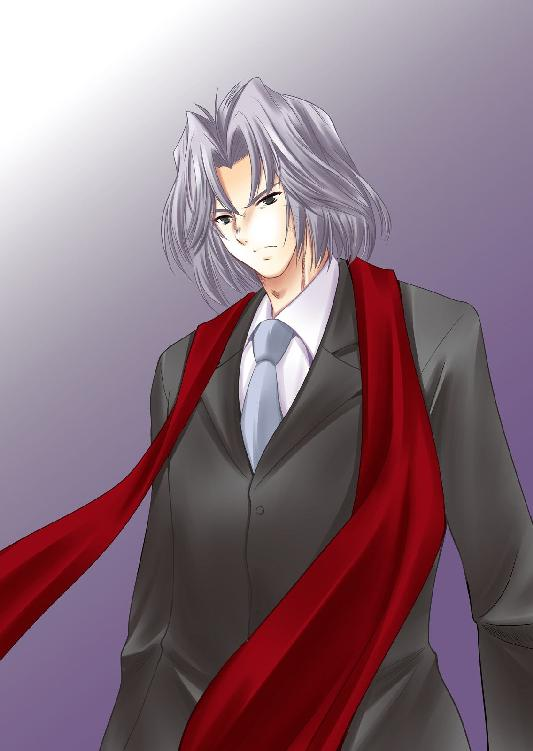
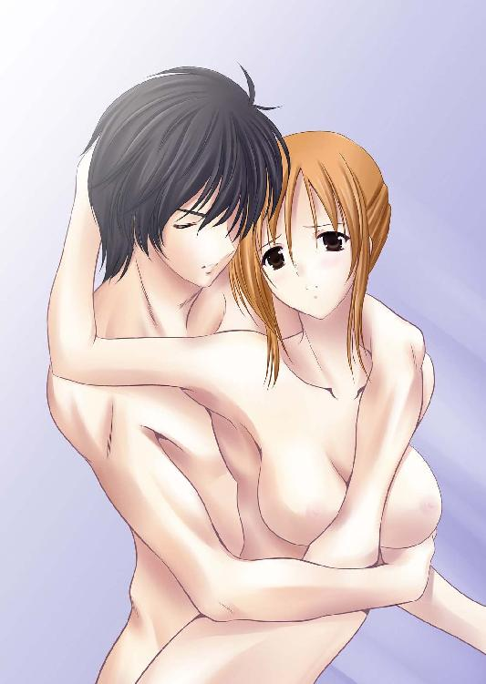

| アポロンと暁の恋奇譚 ～吟遊詩人の狂詩曲～ (ディープラブ文庫) | |
| 上泉伊織 & 秋月たかひろ | |
| (2015) | |
アポロンと暁の恋奇譚
～吟遊詩人の狂詩曲～
上泉伊織
秋月たかひろ
本作品の全部または一部を無断で複製、転載、配信、送信したり、ホームページ上に転載することを禁止します。また、本作品の内容を無断で改変、改ざん等を行うことも禁止します。
本作品購入時にご承諾いただいた規約により、有償・無償にかかわらず本作品を第三者に譲渡することはできません。
本作品を示すサムネイルなどのイメージ画像は、再ダウンロード時に予告なく変更される場合があります。
本作品は縦書きでレイアウトされています。
また、ご覧になるリーディングシステムにより、表示の差が認められることがあります。
序奏
「はあ......、はああん!!」
嬌声が夜の闇に響いた。
窓から差し込む星明りに、一組の男女のシルエットが浮かぶ。
ふたりは、身体を重ね合わせ、睦事に興じていた。
男は女の乳房に顔を埋め、その先端に唇を這わせ、強く吸っている。
その快感に女は身をよじらせ、己の胸元にある男の頭を抱き、その髪を強くかきむしった。
「もっと......！ もっと強く......！」
そう懇願する女の声に応えるように、男は両の手を用いて、痛いぐらいに乳房を揉みしだいた。
「ああっ......！」
女が歓喜の声を上げる。その瞳は、全身を駆けめぐる快感によって、うつろに宙をさまよっていた。
身体に唾液のラインを描きながら、男の身体が移動する。彼の舌が触れるところから全身を貫くような痺れが奔り、女の身体を駆け巡った。
その身体は激しく波打ち、震え、頭を何度も枕に打ち付けた。いやいやをするように左右に顔を振り、しかしその手は、男の顔をより強く自らの身体に押し付けていた。
男の舌が、女の性器に到達した。
「はううん！」
より一層、強く女の身体が弾けた。
その秘所はとめどなく雫をあふれださせ、己の股と、男の顔と、そしてシーツを汚していた。
「もう、我慢できない......。早く、早くください......！」
女は自らはしたなく股を開き、自らの性器を指で押し広げた。
男はうなずくと、その股の間に割って入り、己の分身を雫の源へとあてがい、一息に貫いた。
「はああああああああああああ......！」
気をやらんばかりの快楽が、性器から全身へと、女の身体を満たした。いや、事実、女はすでに半ば意識を飛ばしていた。
「ああ、ああ、あああ......」
女は背中を弓なりに曲げ、顎を反らして、身体を震わせながら絶頂を迎える。
──すでに、この行為の中で、女は両の手では足らぬほどの数の絶頂を経ていた。
それほどまでに、この男との性戯は、かつて体験したことがないほどの素晴らしさだった。
とめどなく押し寄せる絶頂に、糸の切れた人形のように力をうしなっている女の肉体に、男は叩きつけるような抽送を繰り返す。
「もう、やめ、やめ......！ しぬ、しんじゃう......」
突き上げられる衝撃にガクガクと身体を揺らしながら、女はうわごとのように呟いた。
「大丈夫、死なせはしない......。ただし、君のその生命のいくばくかを、私のために捧げてもらう」
男は笑みを浮かべながら呟いた。その動きが、さらに激しくなった。
男の分身は、女の肉体の内側、その最奥部を何度も強く突く。痛みとすら思えるほどの苛烈な快感が、女の意識を完全に奪い去った。
「あ、あ、あああああああああああああああああああ！！！！！！」
女の絶叫が、部屋に轟いた。
男の迸りをその子宮に激しく注がれ、女は目を見開いたまま、ベッドに四肢を投げ出して倒れこんだ。
「ふう......。これで、しばらくはもつ......か」
つい今まで男女の行為を交わしていた相手のことなど気にも留めない様子で、男は呟いた。
そっと目を閉じる。
──すると、どうしたことだろうか。男の身体が、淡い光を放ち始めた。
その光は徐々に強さを増し、男の全身を覆い──やがて、その肌から染み入るように、男の体内へと消えていった。
男の肉体がドクンと脈打つ。筋肉が厚みを増したように膨らみ、何本もの血管がその表面に浮かび上がった。全身に満ち溢れる力を持て余すかのごとく、男は獣のように全身をわななかせた。
やがて落ち着いたのか、男はひとつ大きな息を吐くと、静かに身体から力を抜いた。筋肉は元の大きさに戻り、血管もその内へと姿を消していった。
そして、まるでなにごともなかったかのように、部屋は静寂を取り戻した。
「──お済みでございますか」
その時を見計らっていたかのようにドアが開き、礼服に身を包んだ青年が姿を現した。
「うむ。この女は、いつも通り街の目立たぬ場所で放ってこい」
「かしこまりました」
「頼んだぞ。......それより、例の件はその後どうだ」
「もう少しでございます。──われらの〝時〟が来るまでに、必ずや突き止めてご覧に入れます」
「そうか......。急いでくれ。もう、時間はあまりない」
「はい。わが主よ。あなたのためならば」
青年はそう言うと、ベッドでまだ気を失っている女の身体を抱きかかえ、うやうやしく例をしてドアから出て行った。
「──そうだ。われらには、もう時間は残されていないのだ」
男は窓から星空を見上げた。
流星が一つ、闇夜を駆け抜け、燃え尽きて消えた。
男は、その様を、目を細めてじっと見つめていた。
第一楽章
ああ、もう、なんだってのよ──!!
心の中で毒づきながら、わたしは石畳の道路の上を走っていた。
一体、なんでこんなことになっちゃったんだろう。
憧れの国、ギリシャ。つい先週、二年間通い続けたファッションの専門学校を卒業したわたしは、学生生活最後の思い出として、この神話の国へと卒業旅行に来ていた。
一緒に来る予定だった友達の雪穂が突然の風邪で倒れ、たったひとりの旅行になってしまうと言うトラブルはあったものの──そのことで心配するお父さんを説得するのが一番大変だったけど──ここまではおおむねうまくいっていたのだ。
昨日のお昼過ぎにアテネ国際空港に到着して。時差ボケにやられちゃって、チェックインしたあと、部屋で夕方まで寝ちゃったのはちょっともったいなかったけど。
エーゲ海を臨む高台のレストランで食べた夕食はとてもおいしかったし、街灯に照らされた夜のウインドウショッピングはとてもロマンチックだったし──ひとりなのがちょっと哀しかったけど──それなのに。
「こらー！ 待て！ 待ちなさいってばー!!」
わたしは前方に向かって大声を上げた。日本語で叫んじゃってるので、街を行く人たちが何事かとこちらを振り返るけど、そんなの気にしていられない。
わたしの目の前を走るのは、一人の青年。オレンジ色のニット帽を目深にかぶり、サングラスをかけて、人相を分かりにくくしている。背後から投げかけられるわたしの声なんて無視して、ものすごい勢いで人波をかき分けて走っている。
わたしは、こいつにバッグを盗まれた。
昨日は午後を無駄に過ごしちゃったし、今日は一日観光三昧するんだ！ ──と、勢い勇んで朝早くからホテルを出発した。
バッグから手帳を取り出し、昨晩チェックした名所ルートを確認して。
最初の目的地に向かう途中で、お母さんや雪穂に「今から観光してくるよー♪」ってメールをしようと思って、バッグからスマートホンを取り出した。時差を考えると、日本は今、昼下がりぐらいの時間のはずだ。お母さんは専業主婦だし、雪穂は家でおとなしくしてるはずだし、すぐにでも羨ましがるメールが返ってくるだろう。
建物の隙間の、狭くて細くて暗い路地に入った。これでもわたし、意識高い系女子なのだ。歩きスマホなんかしないんだから。えらいでしょ？ ひとまずバッグを地面に置いて、スマホのロックを解除する。
でも、それがマズかった。ここは日本じゃないのだ。日本だと、そんなところに入ったってなんともないんだけど──ここは外国だった。
スマホの画面に映し出されるキーボードを手馴れた仕草でスワイプしてメールを打っていると、ただでさえ暗かった視界が、より一層暗さを増した。
「え、なに!?」
背後に、人の気配。振り返ろうとすると、背中から回された右手で口をふさがれた。もう一方の左腕で、がっちりと身体を押さえられる。
やだ、ちょっと──これって、チカン？
いや、それも日本人の日和った感覚かもしれない。チカン、なんてかわいいもので済んだらいいけど──もしかしたら、これ、もっとヤバい状況かも。
うんうんと、塞がれた口でうめくわたしなんてお構いなく、チカンの左腕は移動を始めた。
「ん～～～～～～～!!」
チカンの手が、わたしの胸に触れた。
ちょっと！ なに勝手に、わたしのおっぱいに触ってくれちゃってるのよ!!
チカンの手は、はじめはさわさわと撫でるように胸の表面をいったりきたりして、次はふにふにとその柔らかさを楽しむように揉みはじめた。
「んっ......、ううんっ......」
やだ。変な声出ちゃった。......と思ったけど、幸い口をふさがれてるので、それはなんとかうめき声の範疇に収まっていた。多分。
悔しいっ......。何で、ギリシャ旅行二日目にして、こんな目に合わなきゃいけないのよ。そして、それもそうだけど、チカンに触れられて感じちゃってるんじゃないわよわたし！
「ヘヘッ......。おい、てめえ感じてるんじゃねえのか？」
耳元で、チカンの声がした。あちゃ......。やっぱりバレてた？
「ふふふんふふんふふ！ ふっふふふふふふふんふ！」（訳：ふざけるんじゃないわよ！ さっさと離しなさいよ!）
わたしは必死に言い返した。相手に伝わったかどうか分からないけど。
「い～いねえ......。気の強い女は俺、好きだぜ」
背中をゾッとした。こんなセリフ、イケメンに優しく言われたらときめきもするんだろうけど......。こんなヤツに言われたって、気持ち悪いだけだ。
そんなわたしの身震いを快感の震えと勘違いしたのか、チカンは手の動きをより積極的に動かし始めた。胸の先端、その突起を指の腹でコロコロと転がしてくる
「うっ......。んふ、うんっ......」
ああ、もう。わたしの身体のバカバカ。反応するんじゃないってのよ。
わたしが足をモジモジさせたのに気付いたのか、チカンは胸から手を離し、わたしの足をさすりはじめた。ふとももをつつーっと撫でて、わたしの反応を確かめる。......ああ、もう。そうですよ、感じちゃいましたってのよ！
ふとももに、じっとりとした汗が浮かび始めた。チカンの指が、その汗を指ですくい、ふとももにラインを描いた。
「んんっ......！」
口を塞ぐ右手の下で、わたしの息が荒くなる。それを確認して、いよいよチカンが最後の聖域を攻め始めた。
わたしの、足の付け根。
そこに向かって、チカンの左手が内腿を撫でながら責め上がってきた。
やだやだやだ、そこだけは絶対ダメ！
わたし、こう見えても、その──まだなんだから!!
チカンの手がわたしの、その......女の子の部分に触れそうになった瞬間、わたしは力を振りしぼって、思いっきり口をあけて──チカンの右手を嚙んだ。
「いってえええええええええ！！！！！」
チカンが声を上げた。その身体が、わたしから離れる。その隙に、わたしは前に向かって駆け出して、チカンから距離を取った。
「くっそお......！」
わたしの背中からチカンの声がした。振り返ると、チカンは踵を返して逃げ出していった。
よかった、助かった──！
わたしはホッとして胸を撫で下ろした。襲われたのは怖かったけど、身体を触られたのは、なにもこれが初めてじゃない。
高校は電車通学だったから、チカンの経験はすでに何度もあった。そのこともあって、胸やふとももを触られたこと自体のショックはそれほとでもなかった。こんなの、慣れたところで嬉しくもなんともないんだけど。それよりも今は、助かったことを喜ばないとね。
わたしは気持ちの切り替えは早い方なのだ。これ、取り得のひとつ。
さあ、観光して嫌なことは忘れるわよ！ ──と思って地面に置いたバッグを拾い上げようとすると、手が宙空を切った。地面に置いたはずのバッグは、そこから姿を消していた。
「あ、あれ？ ウソ、冗談でしょ!?」
パニックに陥りそうな頭で路地の奥に目を向けると、よく見慣れた色形のバッグを片手に引っつかんだチカンが、わたしから離れるように、かなたに向かって一目散に走り去っていくのが見えた。
やられた────！
分かっている。日本にいるのと同じような感覚でいた、わたしが悪いんだ。
いくら日本人にも比較的馴染みのあるギリシャだからと言ったって、ここは外国だ。しかも、最近は政情不安もよくニュースの話題になっている。「外国旅行する時は暴漢に気をつけて」って、インターネットやガイドブックにも書いてあった。なのに、わたしはすっかり浮かれちゃって油断してた。それは認める。
だからって、ここであきらめてちゃどうにもならないのだ。だって、あのバッグには、現金やクレジットカードの入ったおサイフはもちろん、パスポートだって入っているのだ。これがないと、頼る人もいない外国で、わたしはなにもできなくなってしまう。
『ギリシャ卒業旅行中の専門学校生、遺体で発見!! 身ぐるみ剝がれて食事も摂れず......』
一瞬、大手ニュースサイトのトップページに、そんな見出しが躍るのを想像してしまった。ええい、縁起でもないってのよ！
頭をブンブンと振って嫌な妄想を追い払いながら、私は泥棒にクラスチェンジした泥棒の背中を追いかけ、走り出した。
わたしが必死に走ってる経緯の説明は、ここで終わり。
自慢じゃないけど、これでも中学・高校とバスケットボール部に所属していたのだ。走り込みは毎日嫌って言うほどやらされたし、部を離れてしばらく経った今だって、普通の女の子よりはスピードにもスタミナにも自信はある。そんじょそこらの男にだって負けやしないんだから。
その証拠に、泥棒のあいつはわたしを引き離せない。いや、それどころか、徐々にだけどその距離は縮まってきていた。
あいつも捕まりたくないって思いで必死なんだろうけど、こっちはもっと必死だ。
さっきの妄想みたいにニュース沙汰になっちゃって、巨大匿名掲示板でスレッドが立って、「また女が外国でバカやらかした」とか、「日本の恥」とか鞭打たれる未来なんて、まっぴらゴメンなのだ。
バスケットボール部仕込みのクイックな身のこなしで人ごみの間を縫い、わたしはどんどん泥棒との距離を詰めていく。
あいつは時々こっちを振り返っては、慌てた表情でより必死に走っていた。手に持ったバッグがその勢いで暴れて、バラバラと中身をブチまけている。化粧グッズやハンカチ、それに地図などが地面に散らばった。
「あっ、ちょっと！ 人のモノをそんな乱暴に扱うんじゃないわよ!!」
そうわたしは叫びつつ、地面にブチまけられたそれらを走りざまにヒョイヒョイと拾っていった。これもバスケットボール部仕込みのテクニックだ。今日ほど、あの辛い部活を続けててよかった──と思った日はない。
これで、ついでにおサイフとパスポートも落としてくれればいいんだけど、さすがにそううまくはいかない。一応念を入れて、それらはバックの底の方に押し込んでいたからだ。そこまで注意しておいて、肝心のバックそのものを盗まれちゃったんだから、まったく自分のバカさ加減にはわれながら頭にきちゃう。
泥棒の背中をにらみつけながら人ごみを搔き分けていると、ふと視界が開けた。大通りに出たみたいだ。観光客向けのオープン型のバスが、路肩の停留所に停まっていた。
男はそれを見止めると、これ幸いとばかりにそのバスに駆け込んだ。それとほぼ同時に、プシューと音を立ててドアが閉じた。
「ちょっ、やばっ────!!」
いくらわたしが健脚だからって、バスのスピードにはかなうわけがない。わたしは死ぬ物狂いでバスに追いすがり、その横っ腹をバンバンと叩いた。
「止まって！ ねえ、お願いだから止まってー!!」
バスの窓から、乗客たちが不思議そうな顔をしてわたしを見ていた。無理もない。日本人が、日本語で大声でわめきながら、バスを力いっぱい叩いているのだ。傍から見たら、映画のワンシーンかなにかに見えるかもしれない。
わたしの必死の願いも虚しく、バスは排気ガスを撒き散らしながら、スピードを上げて走り去っていってしまった。こうなってはもう追いつけない。
バスの後部ガラスから、泥棒が勝ち誇った顔でニヤニヤとわたしを見ているのが分かった。憎いことに、こっちに向かってバイバイと手まで振っている。
「～～～～～～～～～～～～っ!! も、もう、完っ全にアッッッタマきた！！！！」
無情に走り去っていくバスの行き先表示を、わたしはしっかりと目に焼き付けた。さっき拾ってポケットに押し込んでいた地図を取り出し、表示されてた場所を確認する。
「今いるのがここで、さっきの表示はここだから......。あれは観光者向けのバスだったし......。うん、だったら多分このルートを通るはず！」
お金もなく、自分の足で追いかけるしかないわたしに出来ることはこれしかない。近道を通って先回りして、バスを待ち受けるんだ。
わたしは踵を返し、地図で居場所を確認しながら、建物の間の細い小路に駆け込んだ。わたしの見込み通りなら、この道を突っ切れば、バスの次の停留所に先回りできるはずだ。この地図は、今朝ホテルを出る際、ホテル内のショップで買ったものだ。観光者向けの物なので、停留所の場所まで詳細に記されている。きっと、......いや多分、大丈夫なはず──！
脇目も振らずに走る。この作戦は、とにかくバスよりも早く停留所にたどり着かないと意味がない。
わたしはこれでも専門学校でファッションを学んだ女だ。外国に行くんだから、恥ずかしいカッコなんて出来ないわ！──と思って、今朝は早くから、時間をたっぷりかけて、服装や髪型をバッチリ決めてきた。バスケットボールをやってたこともあって、身長は女にしては高い方だし、ハイヒールを履いたことでそれがより強調されている。
これで日本の街を歩いていたなら、道行く人にちょっと振り返られるぐらいの見た目はあると思う。多分。
なのに、今のわたしってば、さっきから走り通しで髪はメチャクチャになってるし、額から汗がタラタラと流れている。鏡で見てないから分からないけど、お化粧もひどいことになってるかもしれない。走りにくいハイヒールなんて、とっくに脱いで手に持っちゃってるし。こんなの、日本にいたって不審者だ。
おかげで、さっきから、違う意味で道行く人に振り返られまくりだし。
でも、今はそんなの気にしてられない。気にしないことに決めた。とにかく、とにかく、一刻も早く停留所に着く。恥を感じるのはそれから！
小路は意外に入り組んでいて複雑だった。わたしは何度も地図を見て、不安をおさえながら走り続ける。
「あの角を曲がれば、また大通りに出るはず......！」
最後の曲がり角を目にとめて、わたしはもうひとつ両足のギアを上げた。
角を曲がる。あとはまっすぐ進むだけ。
──の、はずだった。
目に飛び込んできたのは大通りの陽射しではなく、黒い影だった。
「えっ!? きゃ、きゃあっ!?」
「うわっ!?」
ドンッ！
わたしは、角を曲がりざま、誰かに思いっきりぶつかってしまった。
弾き飛ばされて、しりもちをつく。したたかに打ち付けたおしりが痛い。
「い、いったあ～～～～～～っ」
おしりをさすりながら、わたしは体を起こそうとした。その目の前に、手が差し伸べられた。
「大丈夫？ ケガはない？」
わたしは顔を上げた。その視界に映ったのは、ひとりの少年。
黒く短い髪に、クリクリとした大きな瞳、あどけなさの残る──だけど、とても美しい顔。
太陽の光が少年の背後から輝き、その輪郭を金色に浮かび上がらせていた。煌びやかなその様は、神々しさすら感じさせるものだった。
「う、うん、大丈夫......」
わたしは、差し伸べられた手を摑んで立ち上がった。並んで立つと、少年の頭が見下げる高さに来た。表情のあどけなさと言い、多分この子はわたしより年下みたいだ。
「もう、急に飛び出してくるもんだからびっくりしたよ。気をつけなよ、お姉さん」
「う、うん、ごめんなさいね。......え、あれ？ あなた、日本人？」
そうなのだ。少年は日本語で話していた。美しい黒髪といい、日系人なのだろうか。もしかしたら、わたしと同じ観光客？
「いや、僕はギリシャ人だよ。国籍上はね。両親は日本人だけど。だから、この通り日本語が使えるってわけ。お姉さんが日本語で痛がってたから、こっちも日本語を使った方がいいかなって思って」
「そ、そうなんだ。あ、そっちこそケガはない？ わたし、すごい勢いでぶつかっちゃったし」
バスケットボールで鍛えたわたしの当たりの強さは、相当堪えるはずだ。旅行先で現地の人にケガをさせたなんてことになったら、大ごとだ。しかも、相手は多分年下の少年。
「大丈夫だよ。こう見えても、僕は強いんだよ」
少年はニコッと笑いながら堪えた。その笑みが、強烈にわたしの胸を打った。なんと言うか、こう......。わたしは少年シュミはないはずなんだけど、とにかくわたしは引き込まれた。
まるで、太陽──
少年を笑顔を見ながら、ふとそんな思いがよぎった。
その時。
ブロロロロロ......。
「あ～～～～～～～～～～～～～～～～～～～っ！？！？！？」
わたしの正面、少年の背後。そこに見える大通りを、さっきの観光者向けオープンバスが走り去っていった。
忘れてた。わたし、あのバスを捕まえるために、こんな必死に走ってたんじゃない！
「ちょっと、そのバス待って！ 待ってってばーっ!!」
大通りに駆け出し、走り去るバスに向かって大声で叫んだ。でも、当然そんな声はバスには届いてないんだろう。バスは無情に走り去っていってしまった。
後部ガラスからオレンジ色のニット帽が見えた。にっくき泥棒はまだのうのうとバスに乗っているようだ。ここで捕まえられたのに──！
もう一度走ろうと思ったけど、さすがに体力の限界みたいで、もう足が言うことをきかない。さっき少年にぶつかっちゃたことも影響してるのかもしれない。
打つ手を失ったわたしは、ヘナヘナと石畳の歩道にくずおれてしまった。
「お姉さん、どうしたの？」
両手を地面につけてうなだれるわたしの様子を見かねたのか、少年が声を掛けてきた。
「うん、あのね......。わたし、日本から旅行に来たんだけど、さっき泥棒にバッグを盗まれちゃって......。あのバスにそいつが乗ってるの。それで、先回りして捕まえようと思って、必死に走ってたのよ」
「ああ、なるほど。そりゃ確かに困ったね」
「ええ......。もう追いつけないし、わたしどうしたらいいのか......」
「ふ～む、つまりはこうでしょ？ あのバスに追いつけばいいんだよね？」
「そうなの、でももう......。きゃ、きゃあ!?」
言い終わる前に、わたしの体から重力が消えた。足が地面から離れる。わたし、浮いてる？
──いや、違う。わたしの体は、細身ではあるけど筋肉特有の固さを感じられる腕に、しっかりと支えられていた。
右腕は背中から回され、私の右脇の辺りをつかみ。
左腕は、わたしの両膝を裏側から支えて。
目の前には、少年の横顔。
この状況は、要するに、あれだ。
わたし、お姫様だっこされてる────!?
少年は、わたしを抱きかかえたまま、さっきの路地へと戻る。わたしたちの両側には、建物の壁がはるか空に向ってそびえ立っている。
「ちょっ、ちょっ、ちょちょちょちょちょちょっ、な、なななななにするの！？！？！？」
突然のことに混乱して暴れるわたしの体を、少年の両腕ががっちりと押さえ込んだ。この子、見た目によらず結構力がある。
「お姉さん、しっかりつかまっててね」
「つかまってって、一体なにするつもり......。う、うわあああああああ！？！？！？」
今度は、本当に私の体から重力が消えた。ふわりとした浮遊感の後、景色が猛スピードで上から下に流れていった。
タンッ、タンッ、タンッ
何度か建物の壁が眼前に迫り、その度に軽快な音を立てて跳ね返るように遠ざかっていく。
ついには、建物は完全に眼下に流れ去り、目の前に広大な青空と、かなたに広がる地平線が飛び込んできた。
この子ってば──わたしを抱きかかえたまま、向かい合う建物の壁を交互に蹴って、ここまで飛び上がった──!?
「きゃっ...きゃ～～～～～～!? なに？ なに？ なんだってのよおおおおおおおおっ！？！？」
「だからしっかりつかまっててって言ったでしょ？」
こともなげに少年は言い放つ。わたしたちの体は建物の屋根を越えて、なおも高く舞い上がっている。
わたしはけっして高所恐怖症じゃないけれど、むしろジェットコースターとか大好きだけど──それでもこんなの、メチャクチャ怖い！
「あのバスだね」
あくまで冷静な少年の声が、恐怖で引きつっているわたしの耳に飛び込んできた。
恐る恐る下を見ると、街を縦横無尽に走る道筋のひとつひとつがはっきり見えた。その筋のひとつ、かなり離れた場所に、屋根のないバスが走っている。後部座席にはオレンジのニット帽の男が座ってるのがかろうじて分かった。間違いない。あのバスだ！
「う、うん、あのバス！ あのオレンジのニット帽の男が、私のバッグを盗んだ男!!」
「わかった。もう一度言うけど、しっかりつかまっててよ」
少年は私の体をぐっと抱き寄せて、一度建物の屋根に着地した。こんな高さから着地したら、ものすごい衝撃がくる──と思って身体を強張らせたけど、まるで羽根が舞い落ちるかのような柔らかさで、わたしたちの身体は屋根に降り立った。そして、少年はそのままヒョウのように屋根を駆け出した。
信じられない。こんなスピード、わたしとは比べ物にならない。
この小柄な少年は、自分より身長の高い私を抱きかかえたまま、息一つ切らせずに風のような速さで走り続けた。
屋根の端に来ると、そのままの勢いでジャンプ。何メートルもある建物の谷間を、軽々と飛び越えた。
わたしは驚きと、怖さと──少年の超人的な身のこなしに感動を覚えながら、少年の首に両腕を回し、振り落とされないよう必死にしがみついていた。
バスとの距離がどんどん縮まっていく。ついにバスをすぐに見下ろせる建物の屋根まで来た。少年とぶつかった場所から、地図上で見るなら──そして建物の存在を一切無視するなら、ほぼ一直線のルートでここまで来てしまった。ある意味、一番無駄のない、一番最短距離の追走ルート。普通はこんなことできない......と言う点を無視するなら、だけど。
屋根の縁に立つ。眼下の道路に、例のバスが走ってきた。
「いくよ、お姉さん」
そう言うと、少年はわたしを抱きかかえたまま、まるで自宅のベットに倒れこむかのような無防備さで、ぐらっと前のめりに身体を倒していった。
景色が流れて、目の前に道路が飛び込んでくる。わたしたちの身体は、すでにはるか下の道路と平行になるぐらいまで倒れていた。
「おっ、おっ、落ちちゃう～～～～～～！！！！」
ひときわ強く力を込めて、わたしは少年の首にしがみついた。
瞬間。
ドンッ！
少年が、建物の壁を蹴った。
何かが炸裂したかのような音が鳴った。視界に飛び込んできた破片は、おそらく少年の脚力によって踏み抜かれて砕け散った、壁の瓦礫。
少年はその超人的な脚力で持って、壁を地面に見立てて──眼下のバスに向けて、下方向にジャンプしたのだ。壁を破壊するほどの勢いで。
ジャンプによる初速と、落下による加速で、今までとは比べ物にならないスピードで景色が視界を流れていった。
「わ、うわ、うわあああああああああああああああああっ！？！？！？！？！？！？」
もう何度目か分からない、みっともない悲鳴をわたしは上げた。
今のわたしたちは、傍から見たら、きっと隕石か何かのように見えてるだろう。それほどの速さで、わたしたちは落下していた。見る見るうちに、地面が、バスが近づいてくる。こんなの──もう無事で済むわけがない。
『ギリシャ卒業旅行中の専門学校生、街中で墜落死！ 現地の少年と心中か!?』
再び、大手ニュースサイトのトップページに踊る見出しが脳裏をよぎった。さっきとはちょっと文言が違うけれど。
ああ、お父さんごめんなさい。やっぱり、お父さんの言うことを聞いて、この旅行は取りやめとくべきだったかもしれない。
お母さんもごめんなさい。「早くカレシのひとりでも連れてきなさいよ」って口うるさく言ってたけど、結局できなかったね。
普段はうっとうしいだけだったお兄ちゃん。毎週録画してたドラマを勝手にレコーダーから消しちゃったこと、すごく頭にきたけど、この際だから許してあげる。
犬のぱるこ。川原を散歩するたびに変なゴミを咥えてくるクセ、ちゃんと直しなさいよ。
他にも、みんなみんな──バイバイ。
そんな事を考えながら、わたしは観念して目を閉じた。
ドガァッ!!
覚悟してたけど、物凄い音と、振動がわたしの身体を揺さぶった。
あーあ、わたし死んじゃった。そう思った。
すっごく揺れたけど、全然痛くはなかったし、死ぬって案外こんなもんなのかな。あ、それとも、死んじゃったから痛みなんて感じないのかな？
そんなことを、一周回ってなぜかせいせいした頭の中で、ぼんやりと考えていた。
「なにいつまでも目をつぶってるの、お姉さん。ほら、相手は目の前だよ」
ん？ この声はなんだろう。
あ、そうか。これが三途の川の鬼ってヤツかな。
わたし、お父さんたちより先に死んじゃったもんね。親不孝な子だ。そんな子は、そうだ、ずっと川原で石を積み上げては鬼に蹴飛ばされるんだっけ。
あーあ、しょうがないけど、これから先を考えるとさすがに憂鬱だな。
「お姉さんってば！」
「え、うぇ、ハイ!?」
もう一度大きく、今度は耳元で声をかけられて、わたしはビクッとして目を開いた。
太陽の光が目に飛び込んできた。まぶしい。長い間目を閉じてたせいで、その明るさに一瞬視界を失った。
一、二秒のブランクの後、輪郭を取り戻した世界に現れたのは、ひとりの美しい男の子。なんだ、最近の鬼ってカッコイイじゃない。あの世もイケメン化の時代なのかしら。これなら石積み作業も苦じゃないかも──じゃない！
「あ、あれ？ わたし、もしかして生きてる？」
「当たり前でしょ、こっちはちゃんと自信があってやったんだから」
鬼の正体──例の少年は、さも当たり前かのように、すごくフツーにそう言った。
私の身体は、少年の腕に抱きかかえられたままで、どこにもぶつかった様子はないし、当然痛みもない。
でも、足元を見てみると──外装通りレトロな内装が施された板敷きのバスの床は、わたしたちが着地した衝撃で割れて、めくれ上がっていた。まるで、大きな鉄球でも叩きつけたような有様だ。
バスのお客さんたちは、空から飛来した突如の闖入者に、なにごとかと大慌て。あまりのことにバスは走行を中止して、路肩に停まり、運転手さんが何か大声でこっちに向かって叫んでいる。
ああ、もう。こっちは旅行者だっての。一応ギリシャ語は勉強してきたけど、そんな早口でまくしたてられたら分かんないわよ。
そして、わたしたちの正面──そこにいるのは、この騒動の全ての元凶。オレンジのニット帽の、にっくき泥棒。そいつは、すっかり怯えきった表情で、バッグを胸に抱えて震えている。ちょっと、それ、わたしのバッグなんですけど。
「さ、ここからは自分でできるよね？ お姉さん」
「う、うん......多分」
少年は、そっとわたしを下に降ろした。わたしは、うまく床を踏めなくて、ちょっとバランスを崩した。派手な着地のせいで床がめくれ上がってるせいもあるけど、長い間全力で走ったことで今更ながら乳酸が溜まりまくってること、そしてなにより、さっきからのあまりの出来事の連続で、すっかり腰が抜けてしまっていたのだ。
それでも、わたしはできるかぎり強がってるフリをして、キッと泥棒をにらみつけた。呼吸を整えて、頭の中から、こう言う時に使うべきギリシャ語を検索する。これでも、今回の旅行に備えて、何ヶ月も前からギリシャ語会話の学校に通ったんだから。
「ヘイ、こんのアンポンタン！ わたしのバッグ、さっさと返しやがれってのよ！ そんでもって、さっさと家に帰ってママのおっぱいでもしゃぶってなさい!!」
わたしのセリフに、周りのお客さんたちがすごい勢いでドン引きした。あれ？ わたし、言葉間違ったかのかな？
「なかなか言うねえ、お姉さん」
そんな中、少年だけがおかしそうに笑っている。うん、やっぱりこれでいいみたいだ。やるじゃない、わたし。
わたしの剣幕に気圧されたのか、泥棒はますます追い詰められた様子で、上着の中に手を突っ込んだ。
「う、う、うるせえ！ て、てめえらこそ下がりやがれ!!」
手を引き抜くと、そこには──小型の拳銃が握られていた。うわ、やばっ。そう言えば、ギリシャって銃の所持が認められてたんだっけ。
拳銃を見て、バスの乗客たちがパニックに陥った。みんな大慌てで泥棒とは反対の方向、バスの前部へと移動した。運転手はドアを開けて真っ先に逃げた。ちょっと、気持ちは分かるけど、それって無責任じゃない!?
乗客たちも運転手に続いてドアから降りたり、中には窓ガラスをよじのぼってオーブン型の天井から外に逃げたり。あっと言う間に、バスにはわたしたちと泥棒しかいなくなった。
「ほ、ほら、どうしたよ!? てめえらもさっさと消えろってんだよ!!」
泥棒はわたしたちに拳銃を突きつけて叫んだ。わかってる。ここは逃げるのが一番正しい選択だ。
でも、こっちにも引くに引けない事情があるのだ。そのバッグの中に入ってるおサイフとパスポートがないと、わたしはなんにもできなくなっちゃうんだから！
「ヘイヘイ、寝言は寝てる時に言うのね！ そっちこそ、その舌を引っこ抜かれないうちに大人しくバックを返しなさい！」
うん、今度も決まった。わたし、ギリシャ語の才能あるのかも。
少年はわたしの背後で、おなかを抱えて笑っている。
「う、う、うるせえ!!」
バァンッ！
耳をつんざく音が響いた。
その音は、周囲の建物に反響し、軽い残響を残しながら空へ消えていった。
何かが焼けたような臭いが鼻をつく。
ウソ、こいつ──本当に撃っちゃった!?
泥棒は、拳銃を持った腕を上空に掲げて、威嚇で一発撃ったようだ。
「つ、次は本当に当てるぞ！ ほら、さっさと消えろ！ ほら!!」
銃口がわたしたちに向けられた。さすがにやばっ──。よく見るとこいつ、追い詰められすぎて目がイッちゃってる。多分、次は本気で撃ってくる。
ど、どうしよう。やっぱり、ここは言うとおりに逃げた方がいいのよね。せっかく、消えろって言ってくれてるんだし。
よく考えたら、「パスポート盗まれました」って、日本大使館に駆け込めばいい話だし。
「ちょ、ちょっと待って！ わ、分かったわ！ 大人しく消えるから......」
わたしは両手を挙げて、サレンダー（降伏）の意思表示をした。
「へ、ヘヘ、分かりゃいいんだよ......。ほら、そこのガキ！ てめえも両手を上に挙げてさっさと消えろ！」
泥棒は腕を少し横にずらして、銃口をわたしの後ろに立つ少年に向けた。
「そ、そうよ！ 君も、ここはおとなしく言うこと聞いといた方がいいわよ！」
さっきまでイケイケだった自分のことは棚に上げて、わたしは後ろを振り向きながら少年にサレンダーを促した。
振り返って見た少年、その表情からはさっきまでの笑みは消えていた。そりゃそうよね。こんなことになって、さすがに笑ってられるわけないもの。わたしみたいに、怖くて震えて当たり前──じゃ、ない!?
少年の顔には恐怖なんてカケラも感じられず、ただ、つまらなさそうに口を尖らせているだけだった。まるで、遊びを中断させられた子供みたいに。
「うーん、ガキ──ね。まあ、事実だし、そこは反論する気はないけど......。この状況ですごすごと引っ込むってのは、ちょっと面白くないなあ」
口を開いた少年から、予想外の言葉が飛び出した。ちょっと、君、なに言ってるの!?
「あぁん？ おいコラ、ガキ！ てめえ、この銃が分からねえのか？」
「そんなの、見れば分かるよ。でも──そんなもので僕をどうにかできると思ってるんなら、さすがに僕を甘く見すぎってもんだよ」
「ちょ、ちょっと、君！ 君が運動神経すごいのはさっき見たけど、さすがに銃相手には......！」
「まあまあ、見ててよ、お姉さん。あ、ちょっとヘアピン借りるよ」
少年はそう言うと、わたしの髪からヘアピンを抜き取った。アップにまとめた髪を留めていたものだ。
「隠れてて、お姉さん」
そのヘアピンを手に持って、少年はわたしの前に足を進めた。わたしはワケが分からないまま、座席の陰に隠れた。本当は、年上のわたしが少年の盾になればカッコイイんだけど──情けないことに、恐怖のあまりそんな思考が頭から完全に消えていたのと、なにより、少年の表情がすごい自信に満ち溢れていたのを見て、わたしは素直に少年の言葉に従うことにした。
「三歩。ここから三歩だ。僕はゆっくり一歩ずつそっちに歩いていく。その間に僕に命中させられなければ、そっちが大変なことになるよ」
泥棒を見据えて、少年が言い放った。
その瞳には、この年齢の男の子とは思えないような、相手を圧倒する力と──それと裏腹に、この状況が楽しくてたまらないと言った風な、歓喜の輝きがあふれていた。
この子、なに言ってるの──？
目の前の少年が発した言葉に、わたしは耳を疑った。
三歩。わずか三歩進むうちに自分を撃てなければ、逆に泥棒をやっつけると言ったのだ。
観光用で大型とは言え、バスの全長はおそらく十メートル程度しかない。その中に立つわたしたちの距離は、当然それよりもっと短い。多分、せいぜい七、八メートルぐらいしかないだろう。
そんな距離を、銃を構えた相手に向かって、少年は歩いていくと言っている。こんなの、自殺行為以外のなにものでもないじゃない。
「ちょっと、君！ なに言ってるのよ！ そんなの、無茶すぎるわ！」
「だーいじょうぶだって。さっきも言ったでしょ。僕はちゃんと自信があってやってるんだから」
「でも......！」
「いいから見ててって。あ、絶対に飛び出してきちゃダメだよ。危ないから」
危ないのは君の方よ！──と言おうと思ったが、その言葉を投げかけようと顔を出したところで、泥棒の銃口がこっちに向きかけてるのが見えたので、慌てて頭を引っ込めた。
「さて──と、それじゃ、ミュージック・スタートといこうか」
少年はそう言うと、軽やかに歌を口ずさみ始めた。こんな時に歌──？
この子ってば、本当に自分がやってること分かってるの!? ──と思ったけど、少年の歌声がびっくりするぐらい澄んで美しかったこと、そして口ずさむ歌に聴き覚えがあることが、わたしのはやる気持ちを押し留めた。
確か、古い外国映画の歌だ。ちゃん、ちゃっちゃ、ちゃちゃちゃちゃちゃんっ...。これは──。
〝雨のしずくが僕に降り続ける
長すぎる足がベッドからはみ出した男みたいに
何もかもうまくいかない気がする
雨のしずくが僕に降り続ける、降り続けるんだ......〟
これは、そうだ。
ポール・ニューマンとロバート・レッドフォード主演の、『明日に向って撃て！』の挿入歌、『雨にぬれても』だ。
主人公のブッチ・キャシディとサンダンス・キッドが、自分たちを取り囲む銃撃隊に正面から突撃していって──ふたりへの一斉射撃が始まって、何百発もの銃声が鳴り響くラストシーンは、あまりにも有名だ。
子供の頃、テレビで放送してるのを見て、かたわらで一緒に見ていたお母さんに「ねえ、ふたりとも死んじゃったの？」って聞いたのを覚えてる。
わたしは、バスの座席の陰から、少年の様子を眺めた。銃を構えた泥棒に向かう少年は、まさにブッチ・キャシディとサンダンス・キッドのよう。少年は、自分の置かれた状況を、あの映画のラストシーンになぞらえているつもりのようだ。
でも、それだと、少年を待ち受けている運命は──。
一歩。
歌いながら、少年が足を踏み出した。
「ひいっ......！」
「きゃっ!?」
わたしと泥棒が、ほぼ同時に声を上げた。わたしは少年が撃たれる場面を想像してだったけど、泥棒は、少年が本当に歩き出したことに驚いたから......みたいだった。
わたしは、両手で耳を塞いで、ぎゅっと目を閉じたけど、来るべき銃声が鳴り響くことはなかった。
恐る恐る覗き見ると、泥棒は銃口を少年に向けたまま、ガクガクと震えてへたり込んでいる。
無理もない。泥棒は泥棒で、すっごく必死なんだ。泥棒に残された道はもはや、おとなしく捕まるか──それとも、目の前の少年を撃って、血路を開くしかない。でも、実際に「人を撃つ」なんて行為が、そう簡単に出来るわけがない。ほぼ確実に、他人の生命を奪う──そんな覚悟、持ち合わせてるわけがないんだ。こいつは、旅行者のバッグを置き引きしただけの、ただの小悪党なんだから。
「あれ？ どうしたの、撃たないのかい？ まあ、それならそれでいいけど......。それじゃ、二歩目いくよ？」
そう言うと、少年は再び歌を口ずさみ始めた。
〝そして僕は太陽に話しかけた
あんたのやり方、僕は気に入らないな
仕事もしないで居眠りでもしてるのかいって
雨のしずくが僕に降り続ける、降り続けるんだ......〟
さらに、一歩。
再び、少年が歩を進めた。今度も銃声は鳴らない。
「よっ......よせ、やめろぉ！ それ以上こっちに来るんじゃねえ!!」
泥棒が悲鳴のような声を上げた。
「ほら、もうあと一歩しかないよ。せっかくそっちにチャンスをあげてるんだ。生かさないともったいないと思うんだけどな」
少年は、やれやれと言った風に両手を広げた。なんて異様な構図だろう。銃を構えた大人を、丸腰の少年が追い詰めている。
「もう一度言うけど、次が最後の一歩だよ。これで撃たないと、さっきも言ったように、そっちが大変なことになる。そうなりたくないなら──いいね、撃つんだ」
少年の冷静な声に、泥棒がブルッと大きく身震いした。バスの座席に隠れて除き見てるわたしにも分かる。少年の言葉にウソはない。いったい、なにをどうするつもりか分からないけど──少年は、完全に拳銃に勝つつもりでいる。それも、強烈な確信を持って。
〝だけどひとつだけ分かることがある
どんな憂鬱が僕に向ってこようとも
僕は負けたりなんかしない
もうすぐ幸せが僕を迎えに来るんだから......〟
そう歌うと、少年はついに最後の一歩を踏み出した。
泥棒との距離は、すでにわずか数メートルにまで詰められている。
泥棒が引き金を引けば、間違いなく銃弾は少年を撃ち抜くだろう。この距離で外すことはありえない。
ここまできて、わたしはふたりから目を離すことができなくなっていた。どう転んでも、これから目の前で大変なことが起こる。そして、それは、わたしのドジから始まったことなんだ。多分、わたしは、今から起こることを目に焼き付ける責任がある。そう思った。
そして──。
「うっ......、う、うわああああああああああああああああああああ！！！！！！！！！！！！」
ダァンッ！
ついに、その時が来てしまった。
ものすごい音が、バスの窓ガラスをビリビリと揺らした。
その爆音の衝撃波は、わたしの肌にも打ちつけられるようだった。
わたしは、見た。
泥棒が引き金を引いた瞬間──少年の身体が、その輪郭が〝ブレた〟。
どう例えたらいいんだろう。こう、手を思いっきりぶらぶらさせた時のような──ううん、そんなレベルじゃない。
こんな動き、映画やアニメの中でしか見たことがない。昔、残像を残すぐらいの速さで動いて銃弾をかわすＳＦ映画があったけど、まるでそれの再現だ。
とにかく、少年はものすごいスピードで動いて、銃弾を避けたのだ。
しかも、それだけじゃなかった。
これも、とんでもない動きだったから、正直ちゃんと把握できてるのかどうか自信がないんだけど──少年は銃弾をかわしながら、腕を振って、なにかを〝投げた〟。多分。
少年が投げたソレは、どうやら銃を構えていた泥棒の右肩に〝刺さった〟。
泥棒は痛そうな悲鳴を上げて、拳銃を床に落として、右肩をおさえてうずくまってしまった。
「うーん、残念。狙いはよかったんだけどね。ま、これも勝負ってことで。あ、これは没収させてもらうからね」
少年はこともなげにそう言って、足元に転がった拳銃を拾い上げ、手慣れた様子でマガジンを引き抜いて、離れた場所の座席にポイッと投げ捨てた。
「あれ、そう言えば、まだ歌が何小節分か残っちゃってるや。せっかくだから最後まで歌わせてもらうよ」
〝雨のしずくが僕に降り続ける
でも僕の目は涙で赤くなったりなんかしない
泣き言なんて言わないさ
だって文句を言ったってこの雨は止まないんだから〟
さっきまでとは違い、少年は今度は朗々と歌い始めた。やっぱり、すごく美しい声だ。聞いていると、こんな異常な状況なのに、まるでその歌声に引き込まれてしまいそうな。
少年は身を翻して、こっちを振り向いた。わたしと目が合う。少年は、わたしの目をまっすぐに見つめて、歌の最後のバートを高らかに歌い上げた。
〝僕は自由だから〟
〝僕を迷わせるものなんかないさ......〟
第二楽章
ひとつの騒動の終わりは、新しい騒動の始まりでしかなかった。
観光地のド真ん中で、朝早くから発砲騒ぎがあったのだ。当然のことだけれど、警察が大挙して押し寄せて、わたしと少年は何時間も事情聴取を受けた。
解放されたのは、お昼を大分過ぎてから。貴重な卒業旅行の時間が、またもいっぱい無駄になっちゃった。
それだけじゃない。警察署を出たら、現地のテレビ局が待ち構えてて、わたしたちをいっせいに取り囲んだのだ。発砲事件、それも外国人観光客を巻き込んだものとなると、たかがバックを盗んだだけの窃盗事件──とも言ってられないようだ。まだ慣れてないギリシャ語を、あっちこっちから早口にまくし立てられて、わたしの頭は軽くパニックだった。少年が手を引いて駆け出してくれなかったら、どうなってたか分からない。
まったくもう、わたしは被害者だってのよ。あーあ、やっぱり、日本のメディアでも報道されちゃうのかな。
「大変だったよね、お姉さん」
少年は、にこにこと笑いながらわたしに声をかけてきた。この子ってば、本当に何でも楽しそうだ。
「もう、いいかげん、その『お姉さん』ってのやめてくれない？ 一緒に取り調べ受けたんだし、もうわたしの名前も分かってるでしょ？ わたしは『暁百合』。いい？」
「分かったよ、百合姉さん」
「もう、本当に分かってるんだか......。えーっと、あなたはヒナタ、でよかったわよね」
「うん。僕の方が年下なんだから、気軽に呼び捨てでいいよ」
わたしの目の前に立つ少年。超人的な身体能力──建物を飛び越え、銃弾すら避けるほどの──を持つ、この幼さすら残るあどけない少年は、名前を『ヒナタ』と言うらしい。
ヒナタ。漢字で書くと『日向』。太陽に向ってまっすぐ育ってほしい──と言う願いが込められた名前だそうだ。
出会った時にも聞いた話だけど、ヒナタのお父さんとお母さんは両方とも日本人。ヒナタが産まれる前にお仕事の都合でギリシャに渡り、以降定住。だから、ヒナタは血筋的には１００パーセントの純正日本人なんだけど、国籍的には完全なギリシャ人と言う事になるらしい。
親が二人とも日本人と言うこともあり、家庭内での会話はほとんど日本語で交わされてきたそうで、ヒナタは日本語もギリシャ語も話すことができる。『雨にぬれても』を流暢に歌っていたところからして、もしかしたら英語にも通じてるのかもしれない。
こんな年下の男の子が、バイリンガル、いやトリリンガルかもしれない......。そう思うと、この数ヶ月、必死でギリシャ語会話の勉強をしてきた身としては、なんとなく劣等感を覚えてしまうのだった。生まれついての環境から違うものを、どうこう言ってもしょうがないんだけど。
一緒に事情聴取を受けて分かったんだけど──ヒナタが泥棒をやっつけた方法。ヒナタがなにかを投げて、泥棒の右肩に刺した〝アレ〟。アレは、なんと、わたしの頭から抜き取ったヘアピンだった。
ヒナタは、銃弾をかわしざまにそのヘアピンを手裏剣のように投げて、泥棒の肩に刺したらしい。それは肩を走る神経を貫き、結果、つまようじよりも細いぐらいのヘアピンなのに、熱した鉄の棒をねじ込まれたかのような激痛を泥棒に与えたそうだ。しかも、それは偶然なんかじゃなく、全て狙ってやったことだって言うんだから信じられない。
拳銃を処理したあと、ヒナタは泥棒に歩み寄って、なにごともなかったかのように、泥棒の肩からヘアピンを引き抜いた。泥棒の身体は一瞬ビクンッとしたけど、そのあとは痛みなんかまったく消えちゃったみたいで、刺さっていた場所を押さえることすらしなかった。多分、傷口は太めの注射針に刺された程度しかないはずだし、出血もないに等しいぐらいだろう。もっとも、ヒナタへの怯えと、捕まってしまった絶望に打ちひしがれてて、精神的なダメージの方が大きいみたいだったけど......。まあ、それは自業自得よね。
パッと見は物騒だけど、ヒナタは最小限の攻撃で、相手にほとんど怪我をさせることも、後遺症を与えることもなく、完全にあの修羅場を制圧してしまった。
本当に、この子はいったい何者なんだろう。わたしの隣を笑いながら歩く年下の少年を見ながら、つくづく思った。
本人いわく、「小さい頃からなんかできちゃった」とのことらしいんだけど。
「でも、本当に助かったわ......。あなたがいなかったら、わたし、この旅行中はどこにも行けないどころか、なにも食べられないし、いつ日本に帰れるかも分からなくなるところだったわ。せっかくの卒業旅行が台無し、なんてレベルの話じゃなくなってた。ありがとう、ヒナタ」
わたしは、ヒナタが取り返してくれたバッグを肩に掛け、その取っ手をしっかりと握りしめて言った。もう、一瞬だってわたしの身体から離したりしないんだから。
「まあ、いくら観光名所と言っても、日本に比べたら物騒だからね。......って、僕、実は日本にはまだ行ったことないんだけど。こう見えても、小さい頃から音楽をずっとやっててね。練習ばっかりしてたから、そんな時間もなくてさ」
なるほど。どうりで歌が上手いと思った。
「ふーん......。音楽の練習って、本格的にやるとものすごく厳しいんでしょ？」
「うーん、みんなそう言うけどね。僕はつらいとか思ったことはないかな。やってて楽しいしね」
そう言うと、ヒナタはにこっと笑った。その笑顔が──なんて言うんだろう、なぜかわたしの胸に突き刺さった。単純に、この子がすごい美形だからってのももちろんあるんだけど、もっとこう、わたしの心のもっと深いところをざわつかせた。
ううん、本当は、その理由は分かってる。このざわつきは、今がはじめてじゃない。もう何度も経験してきてる。それは──。
「ん？ どうしたの、百合姉さん？」
「う、ううん！なんでもないわ。そ、そうだ！ ねえヒナタ、あなた、おなか空いてない？ ちょうどいい時間だし、一緒にランチなんてどうかしら。助けてもらったお礼ってわけじゃないけど、なんでもおごるわよ」
「いいね！ 実は、僕もさっきからずっとおなかが減ってたんだ」
「それじゃ決まりね。えーっと、この辺のレストラン街って言うと......」
わたしは小脇に抱えたバッグのチャックを開いて、ゴソゴソと地図を探した。その時だ。
キキーッ！
歩道を歩くわたしたちの真横に、黒塗りの大きな車がタイヤをきしませながら停車した。うわ、これってリムジン？ こんな近くで見るの初めて。
リムジンの運転室のドアが開き、中から黒服にサングラスをかけた、いかにもな雰囲気の男が駆け出してきた。
え、ウソ!? これって、映画とかだと、わたしは車に押し込まれて誘拐されちゃうパターンじゃないの？ 一難去ってまた一難、窃盗事件の次は誘拐事件？ ああ、お父さんお母さんお兄ちゃんぱるこ、やっぱりわたし、日本には帰れそうにないかも。
なーんてことをあわあわしながら考えていると、黒服の男はわたしたちをスルーして、後部座席の方へと回り込み、ドアノブを握ってうやうやしくドアを開いた。
クルマの中から、よく磨かれているのが分かる、ツヤツヤと輝く高級そうな革靴が踏み出してきた。
続いて目に入ったのは、これも一目で分かる高級そうなスーツ。そして、屋根にぶつからないようかがんだ、銀色の長い髪。
リムジンから降りてまっすぐに立ち上がったその人は、背が高く、スレンダーで、気品があり、そしてなにより、とても美しい──二十代後半と思しき男性だった。
「はじめまして、お嬢さん。このたびは、わが国において大変な不始末があったようで、とても申し訳なく思っています」
青年はそう言うと、わたしに対して深々と頭を垂れた。
「えっ、い、いえ、そのっ......！ ご、ご、ご丁寧にどうも......！」
反射的にわたしはそう答えてしまったが、なにがなんだか分からない。こんな、誰が見ても一目でどこかのおエライさんだって分かる人、それも超イケメンに急に謝罪されて、どうにかならないほうがどうかしてると思う。
「アンブロシウス・マキシマス......!?」
わたしの隣で、ヒナタが呟いた。なにそれ、このイケメンさんの名前？
「ほう、お若いのに私をご存知とは光栄です。いかにも、私はアンブロシウス・マキシマス。僭越ながら、このギリシャにおいて、国会議員として国民の皆様に御奉仕させていただいております」
「ぎ、ぎ、ぎ、議員さん!? し、失礼しました！ わ、私、日本から観光旅行に来ました、暁百合と申します!!」
あまりのことに、私はビシッと姿勢を正して、九十度を超える角度で深々とお辞儀した。
そんなわたしに、アンブロシウスさんはかえって恐縮してしまったようで、苦笑しながらわたしをとりなした。
「どうか、頭を上げてください。日本人は礼儀正しいと聞いてはいますが、こちらの不始末でそのような態度を取られては、どうしたらいいのか分からなくなってしまいますよ」
「は、はあ......。で、でも、どうして議員さんがわたしなんかのところに......？」

「先ほども申し上げましたが、わが国において、外国人であるあなたに危害を及ぼす不貞の輩が現れたとの報告を受け、ギリシャ国民として、またそれを代表する国会議員として、どうしても謝罪したく、こうして駆けつけたのです。このたびは、本当に申し訳ないことをしました」
そう言うと、議員さんは改めて深々と頭を下げた。
「い、いえ、そんな......。でも、こうして盗まれたものは無事に取り返せましたし、怪我もありませんでしたし、どうかお気になさらないでください」
わたしは左手にバッグを掲げ、右手で自分の身体をパンパンと叩いて、へっちゃらなことをアピールした。
「そうはおっしゃられても、それでは私の気が済みません。私としては、全ての観光客の皆様に、ギリシャは素晴らしい国だったと──そう思って帰路についていただきたいと考えているのです。それがこのようなことになってしまっては、とても残念でならない。どうでしょう、お詫びとして、せめて私の屋敷で昼食をご馳走させていただけませんか？」
うわ。お金持ちのイケメンからの食事のお誘いだ。それも、外国の国会議員さま。こんなの、一生に一度あるかないかだと思う。
──あ、でも、そうだ。わたし、それ以前に、ヒナタをランチに誘っちゃってるんだった。
横目でヒナタを見ると、心なしかつまんなさそうな顔をしている。
「ね、ねえ、ヒナタ。どうしよっか......？」
「さあ？ 誘われてるのは百合姉さんなんだし、好きに決めたらいいんじゃないかな」
うっ。やっぱりちょっとムッとしちゃってる？ わたしは、アンブロシウスさんに話しかけた。
「あ、あの、お気持ちはとても嬉しいんですけど......。ご好意に甘えて、ひとつお願いしてもいいですか？」
「もちろんですよ、どうぞなんなりと」
「この少年──ヒナタも一緒に連れていってほしいんです。今回の事件で、一番力になってくれたのはヒナタですから。ヒナタが助けてくれなかったら、わたし、このギリシャで途方に暮れることになってたと思います」
「ああ、そう言うことでしたら喜んで。おっしゃるまでもなく、こちらの若き英雄もお誘いするつもりでした。さあ、ともに行こう、少年。わが国を代表して、君の勇敢な行動を称えさせてくれ」
アンブロシウスさんは両手を掲げて、大仰な仕草でヒナタを称えた。ちょっと芝居がかってるきらいはあるけど、嫌味さは感じられず、むしろ堂に入っていた。これが、人々の心を摑む、議員としての一種の才能なんだろう。
「......まあ、いいけど」
ヒナタはつまらなさそうな表情のまま、さっさとリムジンに乗り込んだ。
「さあ、お嬢さんもどうぞ」
そう言うと、アンブロシウスさんはわたしの背後から右手を取り、もう一方の手を、歩みをうながすように軽く背中に添えた。こう、外国のパーティーに登場するセレブたちがやってるような仕草だ。うわ──ちょっと、なにこれ、まるでわたし、本当にどこかのお嬢様みたいな扱いじゃない。
背中のすぐうしろに、わたしを包み込むようなイケメン議員の存在が確かに感じられる。男性をこんな風に感じるなんて、もしかしてはじめてかも。
リムジンの中は、これも映画で見たような光景が広がっていた。座ると身体が沈みこむ、ふかふかの革張りシート。足を伸ばしてもまだ余裕がある広大な空間。壁際には小さなカウンターがあり、ワインやグラス、それにロックアイスが備えられている。
ちょっと普通のリムジンと違うなと思うのは、テレビや電話、そしてパソコンなどの情報端末なども装備されていることだ。これは、やはり社会情勢を常ににらんでいる国会議員ならではなのだろう。......と言っても、いわゆる「普通のリムジン」なんてのを語れるほど、詳しいわけじゃないんだけど。
私とヒナタは車内の後部座席に座り、アンブロシウスさんはガラスで仕切りがされた運転席の背後に位置する、壁際のシートに座った。アンブロシウスさんがコンコン、とそのガラスを叩くと、それが出発の合図なのだろう、リムジンは静かに走り始めた。
「どうか、この国のことを悪く思わないでください」
窓を流れる景色を眺めながら、アンブロシウスさんは静かに語り始めた。
「日本でも、おそらく報道されているでしょう。今、この国は危機に瀕している......。二〇〇九年の政権交代によって明らかになった、大幅な財政赤字。経済の低迷にともなう失業者の増大。街では貧富の差が拡大し、いまだ有効な打開策は見出せていません。あなたを襲った泥棒も、おそらくは国策の失敗の犠牲者なのです。つまり、この事件の責任は、国政を担う私にもある......。こうしてあなたにお詫びするのも、そう言った思いからなのです」
街を眺めるアンブロシウスさんの瞳には、深い悲しみが満ちているように感じられた。
「アンブロシウスさん......。観光客のわたしには詳しいことはわからないけど、そんなに自分を責めないでください。わたし、小さい頃からギリシャに憧れてたんです。ギリシャ神話とかも大好きで。だから、両親に無理を言って、卒業旅行の行き先に選んだんですよ」
「そう言っていただけるとありがたい......。せめて、どうかこれからの滞在中は、この国をめいいっぱい楽しんでいってください」
「はい！」
わたしは力強くうなずいた。私はまだ二十歳になったばかりだ。今年参政権を手にしたばかりだし、正直、今まで政治なんか興味があったわけじゃない。インターネットでニュースサイトはよく見るけど、もっぱら芸能ニュースをチェックするだけだ。
それでも、この人ならきっといい政治を敷いてくれる──そう思った。
だけど、どうやらそう思わない人もいるようだ。
ヒナタ。
隣に目を向けると、ヒナタは窓の枠に肘を乗せて頰杖をつき、つまらなさそうに景色を見つめていた。
ヒナタは、アンブロシウスさんが現れてからずっとこの調子だ。さっきは、わたしのランチのおごりがフイなりそうだったからだと思ったけど、どうもそうじゃないようだ。
ヒナタが空気を読まないせいで、なんだか車内の会話が途切れてしまった。
わたしたちを乗せたリムジンは、そのままアンブロシウスさんのお屋敷に着くまで、静かに走り続けたのだった。
＊＊＊
アンブロシウスさんのお屋敷は、まさに〝大金持ちのお屋敷！〟って感じの大邸宅だった。すごく頭の悪い例えだと自分でも思うけど、そうとしか言いようがないんだからしかたない。
はるか遠くまで伸びて端っこが見えない、ものすごく長い塀にがまずそびえ立ち、入り口には葉っぱだかなんだかよく分からないレリーフが施された鉄格子。その向こうに、車一台が通れるほどの小径が木々に囲まれるように通っていて、ずっと向こうに石レンガ造りのレトリックな邸宅が見えた。
「現在のギリシャは共和制ですが、二十世紀半ばまでは王制でした。この屋敷は、その時代の貴族が住んでいたものを、私が買い取ったのです」
アンブロシウスさんは、圧倒されるわたしに対してそう説明した。
リムジンが鉄格子の扉に近づくと、ガチャンと音がして、自動的に開いた。見た目は古風だけど、システムは近代的に改装されているようだ。
しばらく走って玄関のドアに到着。乗った時と同じように、アンブロシウスさんに手を引かれながら、わたしはリムジンから降りた。ヒナタはわれ先に飛び出すように軽快に降りて、うーんと伸びをした。
召使いさんがたくさん出てきて、わたしたちを迎え入れてくれた。うわ。本物のメイドさんや執事さん、生まれて初めて見ちゃった。
「ようこそおいでくださいました。私は、マキシマス家の執事のニコラウスと申します。父の代から、マキシマス家にお仕えおります」
執事さんが、にこやかにわたしたちに挨拶してくれた。年齢は、アンブロシウスさんと同じぐらいだろうか。これまた、とっても美形で......。最近の女の子がイメージするような〝執事〟を、絵に描いたようなステキな男性だった。
「あ、ど、どうも！ こ、こちらこそ、今日はお誘いに預かり......」
わたしは、おサイフのカード入れに挿してある執事カフェのメンバーズカードを思い出して、内心赤面してしまった。ちなみに、あとスタンプ三個で、二千円分の無料券が貰えるところまで頑張っている。
「ニコラウスとは、幼い日よりずっと一緒にいましてね。時には友として、時には兄弟として......。私は、彼を主人と執事と言う関係以上に思っているのです」
「光栄です、アンブロシウス様」
そう言うと、ふたりは見つめあった。
──やだ。このふたり、すっごく絵になる。わたしの乙女の部分が、ものすごい勢いで反応した。
案内された食堂は、二階まで吹き抜けた、高い天井の部屋だった。吊り下げられたシャンデリアが、窓から差し込む太陽の光を浴びて、キラキラと輝いている。
部屋の真ん中には、これ何メートルあるの？ って感じの長いテーブルが据えられ、アンブロシウスさんは上座に、わたしとヒナタはその両側の下座に座った。うう、どうしよう。テーブルマナーにはあんまり自信ないんだけど。
運ばれてきた食事が、これがまた予想通りゴージャス。前菜のサラダから始まり、ミネストローネのスープ、そして主菜のお肉料理。ステーキの上に、なんだかよくわからない、プリプリしたクリーム色の分厚いマシュマロみたいなものが乗っている。初めて見るソレに戸惑っていると、執事さんが「フォアグラでございますよ」とそっと耳打ちしてくれた。フォアグラって！ そんなの、テレビの料理バラエティとかでしか見たことない。恐る恐るナイフで切って口に運ぶと、一口で濃厚な味が口の中に充満した。これ、すっごくおいしい！ ......あ、でも、確かフォアグラって、ガチョウを思いっきり太らせて、肝臓を脂の塊みたいにして作るんだっけ。カロリーすごく高そうだ。
デザートはシャーベット。そして食後のレモンティー。正直、お昼からこんなに食べるのはちょっと重たい気もしたけど、こんなごちそうに預かれるなんてそうそうないし、気にしないことにしよう。
「当家の料理はいかがでしたか」
優雅にティーカップを持ちながら、アンブロシウスさんが訪ねてきた。
「ええ、とてもおいしかったです。恥ずかしいですけど、こんな豪華なお料理をいただいたのは初めてで」
「それはよかった。自慢ではありませんが、当家のシェフたちはみな、それぞれ名の通った一流レストランの出身なのです。全員、すぐにでも自分の店を持てる腕前の持ち主ですよ」
「すごいですね。わたし、お料理は全然だから。お母さんにも、女の子なんだから少しぐらいできるようになりなさいって、よく小言を言われてます」
「でも確か、あなたはファッションの勉強をしていたのでしょう？ 手先が器用じゃないとできないのでは？」
「ええ、まあそうですけど......。」
「ファッションデザイナー、スタイリスト、メイクアップアーティスト......。その分野にも色々ありますが、共通しているのは飽くなき美への探求かと思います。私は、〝美〟に対しては最大限の敬意を払うことにしています」
アンブロシウスさんの声に熱がこもった。
「〝美〟とはなんでしょう。私は、それは若さだと思っています。若さとは素晴らしい。若い、ただそれだけで肉体にも、そして精神にもエネルギーがあふれ、あらゆることに対して無限大の可能性を持つ......。若さとは宇宙だと言ってもいい。宇宙が光の速さで膨張を続けているように、若者も日々進化を続ける」
アンブロシウスさんは立ち上がって言葉を続ける。
「しかし悲しいかな、生物は誰しも永遠に若くはいられない。まず肉体が衰える。それまでできたことができなくなり、あれほどみずみずしかった肌は、まるで干からびた砂漠のようになる。そして、次に精神が朽ちる。健全なる肉体に健全なる精神は宿る──と言いますが、逆もまた然り。肉体が衰えると、精神までが衰えてしまう。そして醜く老いていき、やがては物言わぬ軀となる......。私は、それがとても恐ろしい。私は生きたい。若くありたい。だから、あなたのように、若く、活力に満ちた人を見ると、とても羨ましく思うのです」
アンブロシウスさんの口調は徐々に力を増し、最後はまるで演説しているかのようになった。さすが政治家、話はうまい。──ちょ、ちょっと、過激かな～って気がしないでもないけれど。
「そんな......。アンブロシウスさんは十分お若いじゃないですか。それに、わたしよりよほどエネルギッシュですよ」
「ありがとう、アカツキさん。そう言ってもらえると嬉しい」
アンブロシウスさんは、わたしの言葉に満足気に微笑んだ。
わたしたちの間に、さわやかな空気が流れた──と思ったら、それは一瞬でぶち壊された。
「やれやれ。国会議員って言うからどんなもんかと思ってたけど、そんな格言もよく分かってないなんてね」
ヒナタだ。食事中もずっと黙ったままだったヒナタが、ここに来て突然爆弾を投下した。
「少年、どう言うことかな？」
ヒナタの失礼な発言に、アンブロシウスさんはあくまで大人の余裕を保ったままで問いかけた。
「『健全なる肉体に健全なる精神は宿る』──古代ローマの詩人、デキムス・ユニウス・ユウェナリスが残したと、一般には理解されてる言葉だけどさ。これ、思いっきり意味を取り違えられてるんだよね」
「ほう......」
「正しくは、『大欲を抱けば、すなわち破滅に繫がる。だから、健全なる肉体には健全なる精神が宿ると、せめてそれだけを願うべきである』って感じの言葉なんだ。つまり、余計なことは望むな──って意味の言葉さ。若くありたい？ そんなの、この言葉の意味を正しく知ってたら、とても言えないよ」
「ひ、ヒナタ！ ちょっと、言葉が過ぎない？」
どうしたんだろう。さっきから気になってはいたけれど、ヒナタは──多分、アンブロシウスさんのことをあまり好いていない。
わたしは恐る恐るアンブロシウスさんの方を見た。
「フフフ、いいぞ、少年。その隠そうともしない反発心も、また若さの証。まったく羨ましい」
アンブロシウスさんは、そう笑いながら言った。よかった。あんまり怒ってない......？
「ごめんなさい、アンブロシウスさん。ヒナタが失礼なこと......」
「いいのですよ、アカツキさん。私は政治家です。非難には慣れていますし、この少年の声も、またひとつの市民の声。真摯に受け止めねばなりません」
ああ、大人の男性ってステキ。やっぱり、こう言う余裕がないとダメよね。まったく、ヒナタってば、運動能力はすごくても、まだ子供なんだから。
──なんて思っちゃったわたしの心を知ってか知らずか、ヒナタはナプキンで口を拭うと、立ち上がってドアへと歩き出してしまった。
「ちょっと、ヒナタ！ どこへ行くの？」
「どこって、帰るのさ。ここに来た目的は昼食でしょ？ もう食べ終わっちゃったし、ここにいる理由はないからね」
「で、でも......」
「いや、少年の言うことももっともですよ。ここには、私のたっての希望で来ていただいたのです。あなたたちの貴重な時間を、私のわがままでいつまでも浪費させるのも心苦しい。私もこれから仕事があるので失礼しますが、屋敷の者にあなたたちを送らせましょう。アカツキさん、ご宿泊はどちらに？」
「あ、えっと、パラスホテルですけど......」
「少年は？」
アンブロシウスさんは、ドアに前に立つヒナタの背中に話しかけた。
「......ポイボス・アカデミア」
「ポイボス・アカデミア!? ほう、少年はあの地中海諸国最高峰の音楽学校の生徒だったか」
「だったらどうだって言うんだい？」
「いやいや、私はあの学校に寄付をしていてね。そうだ。そう言えば、数日後にアカデミアで舞踏会があるそうじゃないか。私もお邪魔してよろしいかな？」
「別に、好きにすればいいじゃない。寄付してるんなら、理事長も大喜びで迎えてくれるでしょ」
「それでは、その時にまた会おう、少年。......アカツキさんも、ごきげんよう。残りの日程、どうかよい旅を」
「え、ええ......。お邪魔しました、アンブロシウスさん」
執事さんに案内されて、わたしたちは屋敷を出た。再びあの豪華なリムジンに乗り込む。運転手さんには、既に目的地は伝わっているようで、ドアが閉まるとほぼ同時に発進しだした。ウインドウから、既に西に傾き始めた太陽の光が差し込んでくる。その光が、わたしの隣に座るヒナタの横顔を照らしていた。
「もう、ヒナタ！ せっかくご馳走してもらったのに、どうしてあんな態度を取ったの？」
「......まあ、百合姉さんが知らないのは無理ないけどさ」
「え？」
「あの男には気をつけた方がいいと思うよ」
「ちょっと、なに言ってるの？」
「どうも──ね。おかしいんだよ、あいつ」
「......どう言うこと、それ......？」
いぶかしむわたしを横目で見て、ヒナタは口を開いた。
ヒナタが言うにはこうだ。
アンブロシウス・マキシマス。
若くして超大金持ち。そして国会議員。その政治姿勢は改革派で、舌鋒鋭く、政情不安に陥っている今のギリシャにおいて、ヒーロー的な人気があるらしい。
──だが、不思議なことがある。
彼の素性は、まったくの謎らしいのだ。
彼が表舞台に登場したのは数年前。突如立候補し、巧みな弁舌で瞬く間に人気を得て当選。しかし、彼がそれまでどこにいて何をしていたか、誰も知らないのだ。
豊富な資金も、一体何をやって手にしたのか分からない。その気品の高さから、どこか別の国の貴族なのではないか──と言う人もいるが、噂の域を出ない。
だが、それだけなら、一般国民の妬みや嫉みの類と断じることもできるが、そうも言ってられない話もある。
さっき、わたしたちがいた、あのお屋敷。
あのお屋敷に、若い女性が入る姿がたびたび目撃されていると言うのだ。
それも、ひとりやふたりではなく、何人も。
そして、帰ってきた女性はみな、まるで廃人のようになってしまったらしい。
普通なら大スキャンダルになるところだけど、議員の周辺を洗おうとした記者が、謎の失踪をすると言う事が何度も起こったと言う。
あまりにもおかしなことが続くので、こうして都市伝説のような形で一般にも噂が漏れ伝わってきたのだそうだ。
しかし、しょせんは都市伝説レベルの話。この程度では議員を追及するのには弱いし、何より彼は国民のヒーローだ。誰も本気にはしない。
わたしも、正直、「そんな週刊誌みたいな話を信じてるの？」って気になったけど──わたしに話すヒタナの目は真剣だった。
いつも笑顔でいるイメージのヒナタなだけに、そのまなざしは説得力を持っていた。
「もちろん、僕も最初から信じてたわけじゃないさ」
ヒナタは言葉を続けた。
「でも、今日実際にあいつに会って、話を聞いて......確信した。あいつ、なにかを隠してる。それがなにかは分からないけどね」
「うーん、そうかなあ......。確かに、ちょっと過激な考え方してるな～と思う部分はあったけど、理解はできる範囲だったし......」
「まあ、百合姉さんがそう思うならいいけどね。実際、僕が気にしすぎるのかもしれないし」
「じゃあ、調べてみたら？」
「え？」
わたしの提案に、ヒナタは驚いたような声を上げた。
「いや、だって、気になるんでしょ？ だったら、調べてみたらいいじゃない。あなた、すっごく強いんだし、ちょっとぐらい危険があっても平気でしょ？」
「あっ......」
わたしは半分からかうつもりで言ったんだけど、ヒナタは呆気に取られたような顔をして、そしてうんうんと頷きはじめた。
「そっか......、うん、そうだよ。なんで気付かなかったんだろう！」
「え、ヒナタ？」
「そーだよね、自分で調べればいいんだ。せっかく、あいつが今度の舞踏会に来てくれるって言うんだし。これってチャンスだよね!?」
「あ......、えーっと、ヒナ...タ？」
ヒナタの顔に、完全に輝きが戻った。これは、バスの一件の時に見たのと同じ表情だ。楽しくて楽しくてたまらない──と言ったような、無邪気な笑顔。わたしは、やばいスイッチ入れちゃったかなーと、心の中でちょっと反省した。
そんな「やっちゃった感」に苛まされるわたしに、ひなたがとんでもない提案をしてきた。
「ありがとう、百合姉さん！ そうだ、百合姉さん、まだ何日かギリシャにいるんだよね？ 百合姉さんも、舞踏会に来なよ！ きっと、面白いことが起こるよ！」
「えっ......、ええ～～～～～～～～～っ！？！？！？」
平凡だったはずの、わたしの卒業旅行。
それは、ひとりの少年との出会いで、思わぬ方向に舵が切られ始めた。
＊＊＊
「──まさか、あの少年がポイボス・アカデミアの生徒だったとはな」
屋敷の窓、そのカーテンの裏から、アンブロシウスは百合たちが乗せて去っていくリムジンを見つめていた。
「これも、天の引き合わせかもしれん。私もそろそろ行動に移そうと思っていたところだ......。ニコラウス、例の報告に間違いはないのだな？」
「はい。われらの調査によると、ポイボス・アカデミアに例のものが眠っているとのことです」
少し離れたところに立つ執事が答えた。
「よろしい。それでは、来るべき日にこちらも備えをしておこう。今宵も贄を用意しろ。力を蓄えておく必要がある」
「はっ。かしこまりました」
執事は礼をして、部屋を後にした。
一人残されたアンブロシウスは、再びリムジンを見つめた。
「......私には時間がないのだ。あの少年には分からぬだろうがな」
その瞳には、決意と、焦りと──そして羨望の色が宿っていた。
第三楽章
若さって、美しさってなんだろう。
ホテルに戻り、シャワールームで一日の汗とメイクを落としながら、わたしはぼんやりと考えていた。
朝、バッグ盗難事件でギリシャの街を駆けずりまわったせいで、着ていた服は汗でドロドロになっていた。うーん、これ、お洗濯した方がいいかなあ。このホテル、コインランドリーとかあったかしら。
まあ、それはともかく──わたしの頭の中で、アンブロシウスさんの言葉と、ヒナタの言葉が何度も行ったり来たりでぐるぐると回っていた。
「私は生きたい。若くありたい」
アンブロシウスさんはそう言った。
そんなアンブロシウスさんに、ヒナタは『健全なる精神には健全なる魂が宿る』と言う格言の正しい意味を説いて（恥ずかしながら、わたしも知らなかったんだけど）、アンブロシウスさんを諌めた。
わたしは、この二年間、専門学校でファッションを学んだ。その課程で、お化粧やヘアメイクの勉強もした。ファッションとは、服だけじゃなく、相手の全てをコーディネイトするものだからだ。
わたしも女の子だから、当然だけれど、おしゃれには興味があった。わたしは今でこそ服やメイクに気を遣ってるけど、昔はすごく地味な子だった。中学までは、男の子と話したこともほとんどなかった。
そんな自分を変えたいと思って、高校はわたしのことを誰も知らない遠くの学校を選んだ。電車で片道一時間半は正直きつかったけど、おかげでわたしは、いわゆる〝高校デビュー〟と言うものを果たした。
中学の卒業休みの間に、色んなファッション雑誌を買い込んで、自己流ではあるけれど、おしゃれの仕方を学んだ。
高校の入学式。真新しい制服を着て、新たな学び舎の校門をくぐったわたしは、今までのわたしじゃなかった。
髪を軽く染めて。その時流行りだったスタイリングにして。先生に怒られないであろうギリギリのラインのメイクを施して、ばっちりキメて行った。
学校は共学で、慣れないメイクをして登校するのは、まるで普通のパーティーに仮想して行くような恥ずかしさがあったんだけど──それはいらない心配だったと、すぐに分かった。
男子がみんな、あの年頃特有のいやらしい目をして、わたしを見てくるんだもの。あれは、けっしてわたしの自意識過剰じゃなかったと思う。だって、その後の高校生活で何度も交際を申し込まれたんだから。こんなの、中学までは一度もなかったことだ。
まあ、中学から続けていたバスケットボール部に入ったから、部活の前にはメイクを落とさないと、汗で大変なことになっちゃうんだけど──それすら苦じゃなかった。
おしゃれって、人を生まれ変わらせる。おしゃれって楽しい！
そう思ったから、わたしはファッションの専門学校に進むことを選んだのだ。
でも。
物事を楽しむことと、それを仕事として意識するってことはまったく別なんだと、専門学校での二年間でわたしは知った。
日々、ファッションの勉強に追われているうちに、わたしは逆に──段々と、おしゃれへの興味を失っていった。
大好きだったそれは、ただの作業でしかなくなった。
どうやったらきれいに見えるか。若々しく見えるか。それは、まるで嫌々やっていた数学の授業の問題みたいな感じになって、そこから楽しさは消え失せていった。
なんて言うのかな、アーティストが仕事しなくなるのってこんな気持ちなのかな──と、わたしは学生の身で生意気にも考えたりした。
それでも、ちゃんと学校には通い続けたし、めでたく卒業もした。
けど、せっかく資格も取ったのに、まだ就職先は決まっていなかった。
日本に帰ったら、しばらくは家事手伝いと言う名のプー太郎だ。
お父さんは、娘のわたしから見てもかなりの親バカだから、ずっと家にいていいんだぞーなんて言ってくれてるんだけど、その点お母さんは割とドライだ。きっとこれからお小言攻撃が待っているだろう。
お兄ちゃんはとっくに独立しちゃってるから、余計に居心地が悪い。
そんな時に、今日のアンブロシアさんとヒナタの問答だ。
あの時は、ヒナタの失礼な態度をフォローするのに頭がいっぱいだったから、問答の内容を気にする余裕も無かったんだけど......。こうして時間が経って落ち着くと、徐々にそれはわたしの心に影を落としてきた。
若さって、美しさってなんだろう？
わたしは、もう一度自分に問いかけた。
ホテルのシャワールームには、全身を写せる大きな鏡が据えられている。
そこに写った、自分の身体を見る。
二十歳の身体は、われながらみずみずしく、肌もプリプリだ。こうしてシャワーを浴びていても、肌に跳ね返されたお湯が、丸いしずくとなってつつーっと流れ落ちていくのが分かる。
多分、わたしの肉体は、今が一番美しい時期だろう。それは逆に、ここからは衰えていくだけと言うことだ。
アンブロシアさんの言葉が、再び頭をよぎる。
「しかし悲しいかな、生物は誰しも永遠に若くはいられない。まず肉体が衰える。それまでできたことができなくなり、あれほどみずみずしかった肌は、まるで干からびた砂漠のようになる。そして、次に精神が朽ちる。健全なる肉体に健全なる精神は宿る──と言いますが、逆もまた然り。肉体が衰えると、精神までが衰えてしまう。そして醜く老いていき、やがては物言わぬ軀となる......。私は、それがとても恐ろしい。私は生きたい。若くありたい。」
ヒナタは、格言の意味が違うと反論したけど、今振り返ってみると、ヒナタには悪いけど──アンブロシアさんの言うことも、ちょっと分かる気がした。
わたしは、自分の胸に手を当てた。
大きくもなく、かと言って小さくもない胸。
指で押すと、その力にそってプニプニと形を変える。
今朝、チカンに襲われたことを思い出す。あいつも、わたしが若くて、年齢なりの美しさを持っているから触ってきたんだろう。
もし、わたしがおばあちゃんだったら、きっと見向きもしなかったはずだ。
若さとは、それイコール美しさなんだ。
その意味では、アンブロシウスさんが言っていたことは正しいのかもしれない。
ああ、嫌なこと思い出しちゃった。
まったく、あのチカン、人の身体を好き勝手触ってくれちゃって。
これからしばらく、自分の裸を見るたびにあのことを思い出すのかと思ったらやってられない。
これは──記憶の上書きをしなきゃいけないかもしれない。
瞳を閉じる。
想像する。いま、わたしの胸を触っている手。これは、わたしの手ではなく──いつか出会うだろう、愛する人の手だと。
わたしは、恥ずかしながら、その......まだ経験はない。
わたしの年齢からしたら、多分かなり襲う方だと思う。雪穂なんか、とっくの昔に済ませちゃったらしい。人数もそれなりにこなしてるらしく、そのことでしょっちゅう自慢される。
なによ、早ければ、多ければえらいってわけじゃないでしょ!? ──と、そのたびにわたしは反論するんだけど、正直ちょっとぐぬぬと言う気持ちだ。
だからと言って、誰でもいいからさっさと......って気持ちにはとてもなれない。
やっぱり、そう言うことは好きな人とじゃないと。
自分の胸に触れる手を動かす。ちょっと力を入れて揉んでみる。
「んっ......、はんっ......」
やだ。変な声が出ちゃった。
でも、今はわたしひとりだけのホテルのバスルームだ。こんなの、家のお風呂場では絶対にできないけど、今日ぐらいは自分を解放しちゃってもいいかもしれない。
思いのままに、わたしの──ううん、妄想の中の〝カレ〟の手が動く。
その刺激に、次第に胸の先端が固さを持ってきた。
その突起を、指でつまむ。
「ああんっ！」
また声が出た。でも、もうあえてそれを押し殺そうとはしなかった。
〝カレ〟の手は、突起の先を指の腹でこね回し、時にはつまみ、引っ張る。
わたしのそこは、〝カレ〟の手によって、いやらしいオモチャとなっていた。
わたしは片手では物足りなくなって、両方の手で頭の中の〝カレ〟を再現しはじめた。
背後からわしづかみされるようなシーンを妄想して、ふたつのふくらみをぎゅっとつかんだ。
「んはぁっ！」
もう、止まらなかった。わたしの、いや〝カレ〟の手は、より強く、より大胆にわたしの身体を求め始めた。
〝カレ〟は、わたしの身体のビンカンな部分を知り尽くしているようで──わたしの手なんだから当然なんだけども──巧みな動きでわたしに快感を与え続ける。
その手は、わたしの身体をまさぐりながら徐々に位置を変え、鎖骨を撫で、おへそをくすぐり、おなかの肌の柔らかさを思うままに堪能した。
そして、下腹部にいたって、その茂みをさわさわと楽しんだあと、わたしの身体の一番ビンカンな部分に──ではなく、わたしのふとももへとイタズラの場所を移した。
「もう、意地悪......」
わたしはおあずけを食らった子供のように、〝カレ〟に拗ねてみせた。
〝カレ〟はそれでもなおわたしをいじめるように、内股を撫でて、〝その部分〟に触れそうになるたびにわざと手を遠ざけた。
「はあ......。はあん......」
わたしは足に力が入らなくなって、がくんと膝を落とした。
そのまま顔を床につけるようにして、おしりを突き上げる。
わたし、いま、すごいカッコしちゃってる。こんな、動物みたいなカッコ──。
この段階になって、ついに〝カレ〟の手がソコに触れた。
「うはあぁんっ！」
ひときわ大きな声がわたしの口から漏れた。
わたしの身体で一番ビンカンな、そして神秘的な場所であるそこは、〝カレ〟の手が触れるのを待ちかねて、すでに涙をたくさん流していた。
「んぁっ......。ああん......！」
いちどそこに達すると、もう〝カレ〟は遠慮なんかしなかった。
壊れちゃうかのような激しさで、わたしの大事な部分を蹂躙する。
「ああ、はあ、ああっ......」
〝カレ〟の指が、わたしの中心──すっかり固くなってその存在を主張していた、小さな突起に触れた。
「あああああああっ！」
いままでで一番大きな声が出た。〝カレ〟はそれを喜ぶように、その突起に容赦なく責め始めた。
「あん、ダメ、そこをそんな風にしちゃ......」
わたしは目じりに涙を浮かべながら懇願するけど、〝カレ〟は指の動きを止めない。
指の腹で撫で、爪を立てて引っかき、力を入れて押しつぶし、人差し指でと親指でこね回し──あらゆるテクニックでそこを責め立てた。
「あ、あ、あ、あっ！」
頭が、どんどん真っ白になっていく。わたしはバスルームの床に顔を押し当て、だらしなく口からよだれを流した。
身体が、心がどんどんみだらになっていく。やだ、こんなの怖い。このままじゃわたし、わたし──！
〝カレ〟の指が、いままでで一番の激しさで、わたしの女の子の部分を、下の端から上の端へ、その全体を強く、強く擦り上げた。
わたしの〝入り口〟から小さな〝真珠〟までが、その激しい動きでほぼ同時に刺激された。
「ん、あ、ああ、あああああああああああああああああああああ～～～～～～～～～～っ！！！！！！」
わたしは、ついに絶頂を迎えた。
足が爪先までぴーんと張り、空中でしばらく震えたあと、力を失って床にぱたんと落ちた。
ぐったりと、バスルームの床に倒れ伏すわたし。
その頭の中から、ゆっくりと〝カレ〟が消えていく。
〝カレ〟は、わたしを好き放題に弄んだ挙句、その役目を終えるとどこかに行ってしまった。
──そして、それと入れ替わるように、わたしは〝わたし〟へと立ち戻り、まだぼんやりとした頭の中で気だるい罪悪感をもたらした。
「あ......。シャワー流しっぱなしだった......」
熱を持ったわたしの身体を、シャワーの水が打つ。
シャワーがわたしの汗と、涙と、よだれと──そして、足の付け根からしたたる白く濁った液体を洗い落とし、排水口へと追いやっていく。
わたしはそのまま、しばらく身じろぎもせず、絶頂の余韻に身を任せていた。
＊＊＊
「あ～～～～～～～～～～～～～～～..................」
やっちゃった。
わたし、ギリシャまで来てなにやってるんだろう。覚えたての思春期の中学生じゃないんだから。
お湯じゃないものでふにゃふにゃにふやけちゃった自分の指を見ながら、わたしはさっきまでとはまた種類が違う気の重さを感じていた。
「う～～～～～、自己嫌悪。反省、反省！」
穢れを落とすように意識して念入りに身体を洗ってから、わたしはシャワールームから出た。
バスタオルを頭から被り、身体は裸のまま。どうせ部屋にはわたししかいないんだから、誰にも気を遣う必要はない。
──はずだった。
「こんばんは、百合姉さん。お邪魔させてもらってるよ」
「～～～～～～～～～～～～！？！？！？！？！？！？」
顔の前にまで垂れ下がったバスタオルで塞がれた視界の向こうから男の声がして、わたしは思いっきり後ずさって、その勢いですっ転んでしまった。
「いっ......、いったあ～～～～～～っ」
「大丈夫、百合姉さん？ ......あー、もしかして、あんまり見ない方がいいかな？」
そう言われて、わたしは自分がすごい格好をしちゃってることに気がついた。わたし、転んだ勢いで、その......。声の主に向かって、両足を開いて大事なところを思いっきり見せつけるカタチになっちゃってる。
わたしは、大慌てで身体を起こして、転んだ勢いで完全に頭に絡まったバスタオルを必死に振りほどき、急いで身体に巻き直した。
「ちょっ......、ひ、ヒナタ!? あなた、なんでこんなところにいるの!?」
突然の闖入者の正体。それは、今朝、わたしと助けてくれた、小さな英雄──ヒナタだった。
「うん、いやね。百合姉さんをアカデミアの舞踏会に誘ったじゃない？ でも、考えたら、招待状がないと入れないなーって気がついて。ほら、こうして持ってきたんだよ。このホテルに泊まってるってのは、アンブロシアとの会話で分かってたからね」
そう言うと、ヒナタは右手の人差し指と中指に挟んだ細長い紙をヒラヒラと振った。
「あ、それはどうも──じゃない！ わたしが聞いてるのはそれもあるけど、それよりも、どうやってここに入ったのかってこと！ このホテル、オートロックよ!?」
「ああ、簡単だよ。ほら、そこ」
ヒナタは自分の背後を指差した。窓が開いている。そこから入った──と言うことらしい。
「今朝、あんなことがあったばかりなのに無用心だよ、百合姉さん」
ああ、窓から入ったのね。そう言えば鍵掛けてなかったし。それなら納得──できるわけがない。だって、ここは......。
「あなたねえ、ここは十三階よ!? 一階や二階に入るのとはワケが違うじゃない！」
わたしはヒナタに詰め寄った。もちろん、バスタオルが落ちたりしないよう、しっかり手で支えながら。
「いやね、僕も最初は普通に入ろうと思ったんだよ？ フロントで部屋の番号を教えてもらって、ちゃんとチャイムだって鳴らしたんだから。でも、百合姉さん、居留守使ってるんだもん」
わたしは赤面した。それは居留守じゃない。いや、結果的に居留守なのは間違いないんだけど、別にしようと思ってしたわけじゃない。多分、ヒナタがチャイムを鳴らしたその時──わたしは、バスルームで、その......夢中になっちゃってて、チャイムなんか聞こえなかったんだ。
「それでしょうがないから、一度ホテルの屋上に出てさ。そこから飛んで、上の階のベランダを足がかりにしながら、ここまで降りてきたんだ。そこまでしといてなんだけど、鍵が開いてなかったらちょっと厳しかったかな。この階になると、風も強いからね。僕、寒いのは苦手なんだ」
そんなことできるわけない。だって、このホテルの屋上からって、それって三十階以上から飛んだってことじゃない──と普通は思うところだけど。この子にとっては建物から飛び降りて無傷でいるなんて、自宅の階段を降りるぐらいに簡単なことだってのは、今朝、この目で実際に見たばかりだ。だから、そこについては、もう突っ込まないことにした。それよりも──だ。
「ね、ねえ、ヒナタ。聞こえた......？」
「え？ なに？」
「あの、だからね。その......。そこでわたしがバスルームから出てくるのを待ってる間、えっと、バスルームから......なにか聞こえなかった......？」
「ん？ いや、普通にシャワーの音がしてただけだけど......。僕、つい数分前に来たばかりだし」
よかった。アノ時には、まだヒナタは来てなかったようだ。あんなの聞かれたら、わたし、スニオン岬のポセイドン神殿辺りから、エーゲ海に飛び降りるしかないもの。
「そ、そうなの。それならいいの。でもヒナタ、次からはちゃんとドアから入ってよ。返事がないからって、窓から勝手に入ってこないでね。いい？」
「はいはい、りょーかい。それじゃ、これが招待状。これを校門で見せれば入れてもらえるから」
わたしはバスタオル姿のまま、ヒナタから差し出された招待状を受け取った。上質そうな髪に、金文字で『ポイボス・アカデミア舞踏会 インビテーションチケット』と書いてある。日付は二日後。わたしが帰国するのはその翌日だから、結構ギリギリだ。
「ねえ、さっきはなんとなく聞きそびれちゃったんだけど、あなたの通ってるこの『ポイボス・アカデミア』って、どんな学校なの？」
「どんなもなにも、音楽学校さ。一応、名門ってことにはなってるけどね。僕は、そこの寮に住んでるんだ」
「へー......。今朝、バスの一件の時に聞いたけど、あなた、すごく歌上手かったものね。わたし、あんな状況なのに聞き惚れちゃったもの」
「ありがとう。歌は僕の得意な科目のひとつなんだ。一番得意なのは、また別にあるけどね」
「へえ、なに？」
「これさ」
ヒナタはそう言うと、左腕を掲げ上げて、何かを小脇に抱えるような形を取った。続けて、抱えてるそのなにかを、右手で弾くような仕草をした。
「えーっと......。ハープ？ 竪琴？」
「正解、竪琴さ。大体の楽器は弾けるし、どれも得意ではあるんだけど、これが特に僕のお気に入り」
「へえ......。聞いてみたいわね」
「聞けるさ。今度の舞踏会では、僕ら生徒が演奏を担当するんだ。僕も、演奏団のひとりに選ばれてる」
「あら、それは楽しみね。期待させてもらうわ。......あ、でもわたし、そんなところに行くような衣装は持ってないわよ？」
当然だ。だってわたし、普通の能天気な観光旅行者なんだから。そんなかしこまったところに招かれるなんて想定してない。
「ああ、だったら、学校の衣裳部屋から適当に見繕って、今度持ってくるよ。服のサイズは任せて。百合姉さんの体つきは、もうばっちり分かったからね」
ヒナタはそう言うと、いたずらっぽく笑いながら、バスタオル一枚のわたしの身体を上から下までわざとらしく眺めた。
「もう、やらしいわね！ あなたぐらいの年頃の男の子って、みんなそうなんだから」
「ははは」
そうなのだ。考えたら、年頃の男の子の前でこんな無防備な格好をしてるなんて、普通じゃありえないことだ。しかも、この少年とは、今朝出会ったばかりなのだ。
でも、なぜだろう。ヒナタには、そう言った警戒心を解いちゃうなにかがあるって言うか......。心地のいい気安さを感じる。わたしには意地悪なお兄ちゃんしかいないけど、姉によくなついてくれる弟ってこんな感じなのかな？ ──なんてことを、ヒナタの笑顔を見ながら思った。
考えついでに、もうひとつ、聞いてみたいことが頭をよぎった。
「ねえ、ヒナタ。音楽学校って言ったら......やっぱり、あるの？」
「ん、なにが？」
「ほら──ベートーベンの肖像画とか」
「ああ、もちろんあるけど......。それがどうかした？」
わたしの質問の真意をはかりかねて、ヒナタはきょとんとしている。
「あのね、ギリシャではどうか分からないけど......。日本では定番なのよ。学校の音楽室に飾られたベートーベンの肖像画が夜な夜な血の涙を流すとか、誰もいないのに勝手にピアノが鳴り始めるとか」
わたしも普通の女の子ですから。この手の話は大好きなのだ。もちろん話を聞いてきゃーきゃー騒ぐのが好きなだけで、実際に遭遇するのはまっぴらゴメンだけど。
「あー、日本にそう言う文化？ があるのは、僕も母さんから聞いたことがあるよ。あと、トイレには花子って女の子が住んでるんでしょ？ 変わった風習だね」
ヒナタのなんともない反応に、わたしは落ち込むと同時に、恥ずかしい気持ちになった。うう、いい年して、こんな話振るんじゃなかった。
「あ、でも、そう言えば......」
「そう言えば!?」
ヒナタが意味深に言葉を続けたので、わたしはさっきとは打って変わって、目をキラキラさせながら頭を上げた。
「こんな話は聞いたことあるな。ポイボス・アカデミアは、もともと伝説のある場所に建てられたらしいんだ」
「伝説？」
「学校のある場所、そのはるか地下。そこに、黄金の水が流れる泉があるらしいんだ。大昔には、その黄金の水を求めて何人もの冒険者がチャレンジしたんだって。ほとんどの人は帰ってこなかったんだけど、戻ってきた人は、みんなそれまでより若返っていたそうなんだ」
「若返った......？」
わたしは、さっきバスルームでめぐらせていた考えを思い出してしまった。
「その水がなんなのか、そもそも本当にそんなものがあるのか......。ただ、今もちょくちょく、その水を求めて不法侵入者は来るみたいだよ。若返りの水だって、都市伝説みたいになっててさ」
「ふ～ん......」
想像していたような話じゃなくて、わたしはちょっとがっかりした。それどころか、また面倒くさい考えが頭に戻ってきて、ちょっと気分が滅入っちゃった。
──若さ、ね。
だからって、もう......その、あんなコトはしないけれど。
「ま、他愛のない話さ。それよりも、百合姉さんは舞踏会を楽しんでくれればいいよ。それじゃ、僕もそろそろ戻らないと。寮の見回りの先生に抜け出したことがバレちゃうからね」
「うん、ありがとう......。舞踏会、あなたの演奏を楽しみにしてるわね」
「ああ、任せといて」
ヒナタはそう言うと、ドアじゃなく、窓の方に歩いていった。
「ちょ、ちょーっと待った！ あなた、まさか、窓から帰る気？」
「ん、だって、こっちの方がずっと速いし。行ったでしょ、早く帰らないとまずいんだよ」
「だ、だからって......」
そう言ってる間に、ヒナタは軽やかにベランダの手すりに飛び乗って、軽業師のようにひらりとこっちを振り向いた。
「それじゃあね、百合姉さん。──あんまり、バスルームであんなコトしちゃダメだよ」
「う、うるさいわね！ ......って──え？ ......あ、ああ～～～～～～～～～～～～!?」
言葉の意味に気付いて赤面するわたしを見てクスクスと笑いながら、ヒナタは背中から倒れるように手すりから飛び降りた。
「ちょっ......！」
ベランダに駆けつけて下を見ると、ヒナタは例によって、それがまるで当たり前かのように軽やかに着地して、わたしを見上げてバイバイと言う風に手を降り、そのまま歩道を駆けて行った。
やっぱり、すごいスピードだ。ヒナタの姿は、あっと言う間に夜の闇に消え去ってしまった。
でも、そんなことよりも──。
「......バレて、た............」
わたしはへなへなとへたり込んで、ガクーンと肩を落とした。
バスルームでしちゃったコト、やっぱりヒナタは全部知ってた。
わたしは挫折のポーズを取ったまま、しばらく吹きすさむビル風に身を任せていた。
その風は、まだ火照りを残すわたしの身体から、魂までも凍えさせる勢いで熱を奪っていった。
間奏
ヒナタに出会って。
アンブロシウスさんに出会って。
そして、ヒナタにあんなコトしてたのがバレたからだろうか。
わたしはその夜、性懲りもなく、夢の中で大変な目にあった。
気がつくと、わたしはどこかのお城にいた。
周りには華やかな衣装に身を包んだ大勢の人。みな、手に手を取り合って踊っている。
──ああ、これは舞踏会ね。わたし、思ったよりも結構楽しみにしてるみたい。
「百合姉さん。一緒に踊ってくれる？」
不意に声をかけられた。振り向くと、こじゃれたスーツに身を包んだヒナタが立っていた。
わたしより背が低いくせに、結構サマになっている。
「もう、なに、その格好」
わたしはあえて褒めることはせず、からかうように言った。
「百合姉さんこそ。どうしたの、そのカッコ」
ヒナタに言われて、わたしは視線を落として自分の身体を見た。
「きゃっ!? ウソ、なにこれ？」
いままで気付かなかったけど、わたしはどこかのお姫様のようなドレスを着ていた。スカートを引き上げてみると、ご丁寧にガラスの靴なんて履いちゃってる。
「似合ってるよ、百合姉さん。──さあ」
そう言って差し伸べられたヒナタの手を、わたしはそっと摑んだ。
そうだ、どうせ夢なんだ。楽しんだもの勝ちよね。
お城に流れる音楽に合わせて踊る。身体を近づけたり、遠ざけたりして、古い少女マンガで見たような舞踏会のシーンを再現する。
ヒナタの手が離れ、わたしは軽く身体を回した。すると、わたしの身体を抱きとめる新たな紳士が現れた。
「お嬢さん。今度は私と踊っていただけますか」
今度はアンブロシウスさんの登場だ。
こちらは、どこかの貴族みたいな衣装を着ている。これがまた、すごく似合ってるんだ。
わたしはアンブロシウスさんの広い胸板に密着するようにして、アンブロシウスさんと踊り始める。
うん、やっぱり男性はこうじゃないとね。ヒナタには悪いけど、こうして私の全てを受け止めてくれるような、物理的な懐の深さもないと──なんて図々しく思っていると。
「ちょっと、百合姉さんは僕のものなんだけどな」
ヒナタがそう言って、アンブロシウスさんから奪うようにわたしの体を引き剝がした。
「きゃっ......！ もう、ヒナタってば」
今度はヒナタと踊る。僕のもの──だなんて。年下のくせに、生意気言ってくれちゃって。
「違うぞ、少年。お嬢さんはわたしのものだ」
今度はアンブロシウスさんに引っ張られる。
「ふざけないでよ。僕のものだってば」
わたしはふたりの美形の男性に、右から左へ、代わる代わる引っ張られながら、ダンスを踊り始めた。
ふたりとも、わたしにＬＯＶＥみたい。
さっすが夢。なんて分かりやすい、わたしに都合のいい展開だろう。
わたしは気持ちよくて、ニタニタ笑いながら、ふたりの男性に何度も抱きしめられた。
「こうしていても埒が明かんな。どうかね、少年。私たちで、どちらがお嬢さんを感じさせられるか、ひとつ勝負といこうじゃないか」
「いいね。それなら、僕たちもどっちも楽しめるしね」
──はい？
夢心地でふたりの男性を弄んでる悪女の気分を味わってたけど、なんだか急に話が変な方向に流れ始めた。
「それじゃ、百合姉さん......。はじめようか」
そう言うと、わたしの手を取って踊っていたヒナタが、わたしととん、と押し倒した。
「きゃ、きゃあ!?」
コケちゃう──！ ......と思ったけど、わたしの身体はぱふっと優しくなにかに受け止められた。
見ると、いつの間に登場したんだろう、そこにはふかふかのキングサイズのベッドが備えられてた。
さっすが夢。本当に都合よく話が進む。
「それでは、まず私から......」
アンブロシウスさんが、私に覆いかぶさってきた。
「ちょ、ちょっと、待ってくださ......んんっ!?」
抵抗の言葉を発しようとした私の唇は、アンブロシウスさんの唇に塞がれた。
素早く舌が差し込まれ、わたしの口の中を蹂躙する。
「んっ......、ううん、うふっ......」
たちまちわたしはトロンとしてしまった。アンブロシウスさんが唇を離すと、唾が細く糸を引いた。確か、これ、唾液ブリッジとか言うんだっけ。
「それじゃ、今度は僕だね」
アンブロシウスさんに入れ替わり、今度はヒナタがキスをしてきた。
アンブロシウスさんのキスは、大人の余裕を感じさせる、緩急を使い分けたテクニカルなものだったけど、ヒナタは若さに任せるような、激しく、貪るようなキスだった。
「ふぅん！ んんっ......！」
息ができない。呼吸すら許さないほど、ヒナタは情熱的に私の唇を吸い続けた。さすが、こっちの方も太陽のように熱い......なんて、そんなマヌケなことを考えちゃった。
「ぷはぁっ！」
次第に、本当に息が苦しくなったんで、わたしは引き剝がすように唇を離した。もう、口の周りが唾液でベトベトじゃない。
──でも、これはこれでステキ。
わたしは、そんな乱暴なキスにも、正直悪い気はしなかった。
これは夢なんだし。楽しんだもの勝ちよね（二回目）。
「フフフ、なかなかやるな、少年」
「議員さんこそ、さすがだね」
ふたりはお互いを称えあっている。なんとも変な光景だ。
「さてと、それじゃ......そろそろ最終戦といこうか」
「うむ。私もそろそろ我慢の限界だ」
そう言うと、ふたりはゴソゴソと服を脱ぎ始めた。
──うわ、ウソ。やっぱりそこまでいっちゃうの？
身につけてものを全てを脱ぎ捨て、ふたりは一糸まとわぬ姿になった。それぞれ、ちょっと鍛え方の方向は違うけど、どっちもとても引き締まったいい身体をしている。
「きゃー！ ちょ、ちょっと！ こ、こっちが恥ずかしいじゃない！」
全裸のふたりを前にして、わたしは両手で顔を覆った。お約束通り、ちょっと指を開いて、その隙間からふたりの肉体を凝視しながらだけど。
「なに言ってるの、百合姉さん。そっちだって裸じゃない」
「へ？」
ヒナタの声にはっとして自分の身体を見ると、いつの間にかさっき着てたドレスは消えて、わたしも生まれたまんまの姿のなっていた。
「きゃー！ きゃー！」
わたしは慌てて、両腕で胸と股間を隠して身を縮めた。
そんなわたしに、ふたりがベッドの上に乗って、わたしににじりより始めた。
「さあ、百合姉さん......」
「お嬢さん、いっしょに楽しみましょう」
ふたりの肉体が迫る。
「や......、やあん......」
わたしはぎゅっと瞳を閉じて、覚悟を決めてふたりに身を任せ──
ピピピピピピピピピピ......
目覚ましが、鳴った。
わたしはガバッと飛び起きた。夢を見るのは、眠りが浅い時らしい。詳しいことはよく知らないけど、こんなにはっきりした夢だと、眠りもそのぶんかなり浅いんだろう。わたしは一瞬で覚醒して、マンガのワンシーンみたいに目覚めた。
そして──急激に、頭が、醒めた。
「最低だ、わたし......」
わたしは自己嫌悪しながら、シーツの上に突っ伏して、顔を埋めた。
昨晩替えたばかりの下着が、少し湿っていた。
第四楽章
約束通り、舞踏会用の衣装がヒナタから届けられた。
今朝、あんな夢を見ちゃったあと、気を取り直してシャワーを浴び、お昼前に観光に出発した。明後日には飛行機でギリシャを離れる。わたしがギリシャにいられるのも、残り僅かな日数になってきた。
思い残しのないように、いろんなところを見て回って──観光を終えてホテルに戻ると、フロントで「お荷物をお預かりしております」なんて言われたものだからびっくりしちゃった。
取っ手付きの厚紙のケースに入れられたそれを部屋に持って返って開いてみると、もう一度びっくり。
......ちょっと、これ、思いっきり本格的なドレスじゃない。しかも、傍らには、仮面まで添えられていた。
え、うそ、これって仮面舞踏会なの？ そんなの聞いてないわよ。
とりあえずドレスを持ち上げて、鏡の前で自分の身体に合わせてみる。ノースリーブで、胸から下を覆うようなタイプのドレスだ。......う、うーん。わたし、自分の素材はそんなに悪くないとは思ってるんだけど──さすがに、こんなドレスを身に着けるのかと思うと、ちょっと萎縮しちゃう。
着付け方は専門学校で習ったし、他人には何度も授業で着せたこともあるんだけど。あ、そうだ。ここでひとつ、問題発生だ。
このドレス、多分ひとりじゃ着れないじゃない。
うう、このホテル、ドレスの着付けサービスとかやってるかなあ。あとでフロントに聞いてみないと。
すると、ドレスの裾から、何か小さな紙がひらりと落ちた。
拾ってみると──なんと、それはヒナタからのメッセージカードだった。
『このドレスを着て踊る百合姉さんの姿を楽しみにしています ヒナタ』
──と書かれてある。なによ。年下のくせに、粋なことしてくれちゃって。
でも、そう言えば......。わたし、男の人にここまでしてもらうのって、考えたら初めてかも。
高校デビューして、おしゃれに目覚めてから──正直に言って、わたしはそれなりにモテた。告白されたのも、一度や二度じゃなかった。でも、なんとなくその気になれなくて、結局お付き合いの経験がないまま、今に至っている。一応、デートまでいった相手はいるけれど、映画を見たりお食事をしただけで、そこから先に進むことはなかった。
だから、わたしにとって、異国の地で出会った年下の少年──ヒナタは、家族を除けば、わたしの人生でもっとも身近になった男性かもしれない。
──あんな恥ずかしいコトしてるのもバレちゃったし。ああ、何度考えても、顔から火が出そう。昔の少女マンガなら、「責任取ってよね！」とでも言いそうなところだ。
でも、そんな気持ちも、送られたドレスと、このメッセージカードを見ると、まあいいか──と思えるようになった。
ドレスをぎゅっと抱きしめて、顔を埋める。
あの日、ものすごい身体能力で、わたしのピンチを救ってくれたヒナタの姿を思い浮かべる。
......なんか、わたし変だな。あれから、なぜかヒナタのことばかり考えてる。
もしかして──恋？
ううん、違う。少なくとも、今はまだ、違う。
わたしは──あの子の輝きに惹かれてるんだ。
いつも明るく笑ってて、どんなことでもプラスに変えちゃって。
そんな彼に、そんなまぶしさに──わたしは太陽を感じていた。
地上に生きるものは、みんな太陽の光を浴びて生きている。
だから、わたしが太陽に惹かれても、きっとそれは自然なこと。
彼は、多分、わたしにないものを持っているから。
進むべき道を見失ったわたしが捜し求めているものを。
だから──彼に会えば、もしかしたら、わたしはまた歩き出せるかもしれない。
彼が、私の道を照らし出しててくれるかもしれない。
そんな気持ちが、何度も胸にヒナタの顔を思い起こさせていた。
わたしは、ドレスを胸に抱いたまま、窓を開けてベランダに出た。空には様々な星座が描かれている。
この星の下のどこかに、ヒナタはいるのだろう。
明日、また彼に会える。
＊＊＊
舞踏会当日の夜。
結局、わたしはホテル内の美容室で着付けとヘアメイクをしてもらって、ハイヤーに乗ってポイボス・アカデミアへと向かった。
本当は、普通の安いタクシーでも拾って行こうと思ったんだけど、美容師のお姉さんが「こんないいドレスを着て舞踏会に行くんでしたら、ホテルがハイヤーを手配してくれますよ」と教えてくれたのだ。
お父さんから渡されたお小遣いが、もうそろそろオーバーしそうだったから、ちょっとありがた迷惑かな......と思ったけど、まあこんな経験なんてめったにないし、素直にその提案を受け入れることにした。
ハイヤーの窓から、ギリシャの街並みを眺める。うーん、最近、妙に高級車に乗ってる気がするなあ。お父さんのクルマは普通の国産、しかも中古車だから、わたしの土産話を聞いたらムッとしちゃうかもしれない。
ポイボス・アカデミアは、思ったよりもホテルから近かった。よかった。これなら、ハイヤー料金も安く済んだかもしれない。
ハイヤーのドアが開くと、足元にはお約束のように赤絨毯が敷かれていた。ドアに駆け寄ったボーイさんがわたしの手を取り、降車をリードしてくれた。ちょっと。これじゃわたし、完全にセレブじゃない。つい先週まで、ただの専門学校生だったんですけど。
ボーイさんに手を取られたまま立ち上がると、そこには圧倒されるような光景が広がっていた。
ポイボス・アカデミア。そう言えば、話に聞いただけで、そこがどんな様子なのかはまったく聞いていなかった。名門の音楽学校──と言うから、なんとなく漠然としたイメージはあったけれど。でも、目に映るそれは、想像をはるかに超えていた。
お城だ。中世のヨーロッパの光景でよく出てくるような──えーっと、確か世界史の授業で習ったな。そうだ、ルネッサンスだ。ルネッサンス様式のお城が、わたしの目の前にそびえ立っていた。こ、これが学校だって言うの？ さすが神話の国、ギリシャ。そのスケールは、日本人のわたしの常識を超えている。
周囲を見回すと、これまた「セレブ！」ってオーラをビンビンに振りまいた紳士淑女が大勢いた。みんな、仕立ての良さが一目で分かるスーツやドレスを身にまとって、お上品そうに談笑している。そして──全員、顔に仮面を着けていた。
......って、そうだ、仮面だ。やっぱり、今日は仮面舞踏会なんだ。
わたしは腕に掛けたハンドバッグをごそごそと漁って、ドレスと一緒に届けられた仮面を着けた。
あまりの自分の場違い感（実際はそうでもないかもしれないけど、わたしの心の問題なのよ）にたじろぎながらも、できるかぎりシャンとして、わたしは赤絨毯を踏みしめながら入り口へと向かった。
身長よりもはるかに高い、これまた高級そうな木製の扉が開かれ、受付係の人が招待状をチェックしていた。わたしはハンドバッグからヒナタに貰った招待状を取り出し、受付係さんに手渡した。
「アカツキ・ユリ様ですね。承っております。どうぞ、今宵は楽しいひとときをお過ごし下さい」
受付係さんはそう言うと、わたしににっこり微笑みかけてくれた。その笑顔があまりにもステキで、場違い感丸出し（実際はそうでもないかもしれないけど以下略）なわたしを、逆に惨めな気持ちにさせた。
人の波に沿って進むと、開けた空間に出た。
これは......ダンスホールだ。建物の中ほどまで吹き抜けた高い天井。そこから、ロウソクが取り付けられたシャンデリアがいくつも掛かり、独特の明るさでホールを照らしていた。どこからか音楽が流れている。おそらく、奥の方で、この学校の生徒たちが生演奏をしているんだろう。
ホールの紳士淑女たちは、その音楽に乗って、お互いに手を取り合ってダンスを踊っていた。どうやら、既に宴は始まっているようだ。
うーん、このままポカーンとしてるのもなんだか間抜けだなあ。と、とりあえず、わたしも格好だけでも適当に踊っといた方がいいかも......って、ここまで来てようやく気付いた。わたし、ペアになるような人なんていないんですけど。いったい、ここでどうやって過ごせって言うの!?
重大な事実が今更発覚してあわあわしてると、背後から声を掛けられた。
「お嬢さん。一曲、お相手していただけますか？」
「え？ あ、ええ、は、はいっ!?」
ビクッとして間抜けな声を上げながら振り返ると、そこに立っていたのは、銀色の長髪が印象的な紳士。その顔は仮面のせいで判然としないけれど、この髪には見覚えがある。
「あの、もしかして......アンブロシウスさん？」
「ご明察です。数日振りですね、アカツキさん」
アンブロシウスさんはフフッと笑うと、仮面を取って素顔を見せた。
その顔を見て、わたしは思わず赤面してしまった。今朝見た夢を思い出してしまったのだ。うう、もう。わたしったら、本当、なんであんな夢を......！
「あなたがここにいらしたと言うことは──あの少年のお誘いですかな？」
「ええ、そうなんです。ヒナタったら、強引に決めちゃって。このドレスも、ヒナタが貸してくれたものなんですよ。でもわたし、こんなところ初めてだから、なにをどうしたらいいのかわからなくて......」
ヒナタがわたしを誘うきっかけになった話──アンブロシウスさんにまつわる黒い噂──のことは、当然ボカして事情を説明した。本当に、目の前のこの紳士が、そんな噂になるような事をしてるんだろうか？
「はじめはみんなそうですよ。私だってそうでした」
「アンブロシウスさんも？」
「ええ。もう遠い昔のことですが......。見た目は素晴らしいものの、異常に視界の狭い仮面を選んでしまいましてね。当時の私はまだ子供でしたから、実用よりも見栄えを重視したのです。ですが、そのせいで足元がよく見えず、とある令嬢のスカートを踏んで転んでしまいましてね。運悪く、ワインなどが置かれたテーブルに突っ込み、その場を台無しにしてしまいました」
「まあ......。アンブロシウスさんにも、そんな頃があったんですね」
「まったく、今もできれば思い出したくない過去ですよ。それ以来、出来る限り覗き穴の大きい仮面を選ぶようにしてるのですがね」
そう言うと、アンブロシウスさんは再び仮面を着けた。うん。たしかに、覗き穴は大きい。
「それにしてもすごいですね。名門音楽学校とは聞いてましたけど......。日本人のわたしからしたら、ここって本当に学校？ って感じです」
「いえいえ、ここは校舎ではないですよ」
「え？」
「校舎はこの建物の裏手にあります。ここは、こう言った催しや、生徒の発表会の時に使われるオペラホールです。この建物は、ポイボス・アカデミアの中でも一番古いものでしてね。特に、ここでの演奏のメインを勤めることは、アカデミアの生徒たちにとって最高の栄誉とされているのです」
「へえ......」
「先ほど、今夜のメインを勤めるのは誰か、係りの者に聞いてみたのですが......。おっと、噂をすれば影とはよく言ったものだ。その栄誉に預かった生徒が、演奏を始めるようですよ」
演奏が一旦休止し、紳士淑女たちもダンスを止めた。今まで気付かなかったけど、ダンスホールの奥の方に、場内に流れる音楽を奏でていた一団が座っていた。彼らが、この学校の生徒たちなのだろう。
そして、みんなの注目の中、ひとりの生徒が楽団の中央に立った。東洋系の顔立ちの、黒髪の美しい少年。
──ヒナタだ。
ヒナタは、中世の音楽家のような衣装を身にまとい、左脇に竪琴を携えていた。
「皆様、今夜は当校、ポイボス・アカデミアの舞踏会にようこそお越しくださいました。僭越ながら、本日は私、ヒナタが演奏のメインと勤めさせていただきます。どうぞ皆様、楽しいひとときをお過ごしください」
うわあ──と思った。そこにいるヒナタは、今まで見てきた少年らしいあどけなさなんてカケラもなかった。
ひとりの音楽家。
そんな堂々とした佇まいが、彼の全身から発せられていた。顔つきまで大人みたいに見える。
挨拶を終えたヒナタは竪琴を構え──それを奏ではじめるとともに、静かに歌を歌いはじめた。
美しい。
それが最初の感想だった。
ヒナタの歌声はすでに一度聞いてるけれど、今日聞くそれは、あの時の遊びのような歌い方とはまるで違った。
ううん、その歌い方でさえ、うっとりするような上手さだったんだけど──いま、このダンスホールを満たしている歌声は、まさにひとつの楽器だった。
低音から高音までよどみなく伸び、竪琴の音色と素晴らしい調和を生み、わたしたちの耳と心を潤した。
これが、本当のヒナタ。ポイボス・アカデミアの最高の栄誉を託された少年、真の姿なのか。
わたしは、目の前で歌う小さな吟遊詩人に、すっかり魂を奪われてしまっていた。
「ふむ......。なるほど。これは、聞いていた噂などかわいいものだったようだ」
完全にヒナタの歌声の世界に魅せられていたわたしは、アンブロシアさんの声でわれに返った。
「噂って？」
「いや、以前から有名だったのですよ。今のポイボス・アカデミアには、稀代の天才がいると......ね。それがあの少年、ヒナタです。かく言う私も、今日に至るまで、彼が噂の主人公だとは知らなかったのですが」
「天才......？」
「ええ。子供の頃から類稀なる才能を発揮し、あらゆる音楽コンクールを制覇。アカデミア史上初の特待生として招かれた後も、その才能は曇るどころかますます輝きを増し、遂には、この学校の数百年に渡る歴史の中でも、初の栄誉を与えられたそうです」
「初の栄誉？」
「『ポイボス・アカデミア』。その名に冠された〝ポイボス〟とは、ギリシャ語で〝光り輝く〟と言う意味の言葉です。それは、アポロンを象徴する言葉でもある。アポロン。言うまでもなく、ギリシャ神話の太陽の神です。同時に、音楽や芸術の神。この学校が〝ポイボス〟を校名に戴いたのも、そのアポロンにあやかったためなのですが......。その神の名を、彼は名乗ることを許されたのです」
「えーっと、つまり......どう言うことなんです？」
話がよく見えなくて、わたしは話の先をうながした。
「この学校における彼の異名は、『アポロンのヒナタ』。彼は、その才能を持って──この学校の神となったのですよ」
わたしはヒナタの方を振り返った。彼は今も高らかに歌っている。そのあまりの素晴らしさに、ダンスホールにいる人は踊ることをすっかり忘れて、ヒナタの世界に浸っていた。
太陽と音楽の神、アポロン。それがヒナタの別名だと言う。確かに、そうかもしれない。だってほら、まるで、ヒナタの頭上から光が射しているような──そんな錯覚すらするもの。
以前、ヒナタは語っていた。練習ばっかりしてきたけど、つらいと思ったことはない。やってて楽しいと。
その時点で、それはすでにひとつの才能と言っていい。わたしは──自分が選んだ道に、すでに楽しみなんか失ってしまってる。
ヒナタは、音楽の神に愛されている。音楽の素養なんかまるでないわたしにも、それはほとんど確信を持って感じられたのだった。
演奏が終わった。
舞踏会だと言うのに、踊る人はひとりもいなかった。みな、時を忘れて、ヒナタの奏でる旋律と、清らかな歌声に魅せられていた。
しばらくの静寂のあと、ダンスホールを震わせるような拍手喝采が沸き起こった。
わたしも、手が痛くなるような勢いで、夢中で拍手を送った。わたしは今までスタンディングオベーションなんてしたことがないし、今は最初から立ってるけど、もし座席に座ってたら、思わず立ち上がってたと思う。
みんなから喝采を送れられて、ヒナタは誇らしげな、でもちょっと困ったような表情をしていた。無理もない。みんなが踊るために演奏したのに、誰もが踊ることを忘れて聞き入ってたんだから。
「すごい！ すごいですね、ヒナタって！ わたし、あんなステキな音楽を弾ける子と友達になっちゃったんだ!!」
他人のことなのに自分まで誇らしくなった気がして、ヒナタを見つめたまま、わたしは大はしゃぎでアンブロシウスさんに話しかけた。
「............」
「アンブロシウスさん？」
返事がないので、わたしはアンブロシウスさんの方へ顔を向けた。
「────!?」
わたしは、見た。
そこにあったのは、わたしがこれまで知っている、アンブロシウスさんの顔じゃなかった。
顔と言うよりは──貌。
常に冷静で気品があり、理知的だったアンブロシウスさんの顔は、まるで獣のように険しくなり、ヒナタをその双眸にとらえていた。
ゾクッ──。
わたしの背中に、冷たいものが走った。この顔は普通じゃない。
そこから感じられるものは──嫉妬？ 憎しみ？ 怒り？
ううん、そんな言葉じゃ足りない。
それらが混じりあった、もっと深くて、もっと黒いものが──今、目の前のアンブロシウスさんを支配していた。
あまりのことに、わたしはたじろいじゃって、ふらふらとよろめくように一歩後ろに下がってしまった。
そこでようやくアンブロシウスさんはわたしの呼びかけに気がついたのか、それともたじろぐわたしを視界の端に留めたのか、わたしの方を振り返って、
「どうしました？ お嬢さん」
などと、なにごともなかったかのように声を掛けてきた。
その顔には、もうさっきまでのおどろおどろしい影はなく、いつものアンブロシウスさんに戻っていた。
「あ、い、いえ、なんでも......。ただ、ヒナタってすごいですねって......」
わたしはおずおずと言った。
「ええ、そうですね。さすが、アポロンの名を許されただけはある......。私の寄付が、将来音楽史に偉大なる足跡を残すであろう彼の一助になっているのであれば、こんな喜びはありません」
アンブロシウスさんはそう言って、拍手でヒナタを称えた。
......やっぱり、元のアンブロシウスさんだ。わたしがさっき見たのは、勘違いか、目の錯覚だったのかな？
「フフフ......。しかしこれは、私も少々血が騒いできました」
「え？」
「本当はもう少し後にするつもりだったのですが......。こうまで刺激されては仕方ありませんね」
そう言うと、アンブロシウスさんは楽団に向かってツカツカと歩き始めた。
「あ、あの、アンブロシウスさん!?」
背後からかけられる私の声など聞こえないかのように、アンブロシウスさんはまっすぐに進み、ついにヒナタの正面に立ってしまった。
「やあ、議員さん」
ヒナタは突如目の前に現れたアンブロシウスさんに驚いた様子もなく、いつも通りの調子で言った。
「見事だったぞ、少年。これほどとは正直思ってはいなかった。......いや、本当に素晴らしい。その才、まったく羨ましいよ」
真正面から向かい合うふたりを見て、他の招待者たちもざわめき始めた。
「アンブロシウス議員だ！」
「改革派の新星......」
「私、前の選挙では彼に投票したのよ」
みな、口々に騒ぎ立てた。
「あのさ......。ちょっと、雰囲気が壊れちゃったんだけど」
その様子を眺めて、ヒナタは不満気にアンブロシウスさんに言った。
「ああ、これはすまない。ならば、そうだな。少々罪滅ぼしをさせてはくれないかな」
「罪滅ぼし？」
「なあに、ちょっとした余興だよ。実は私も音楽の経験があってね。もちろん、君にはとても及ばないが......。せっかくだ。ここで一曲、私に演奏させてはくれないかな」
そのアンブロシウスさんの言葉に、ダンスホールは一段とどよめいた。
「いいぞー、議員！」
「私も聞いてみたいわー！」
そんな風にはやし立てる人まで現れる始末だった。
「ああ言った声もあるが......どうかな、少年？」
少しの沈黙が、ヒナタとアンブロシウスさんの間に流れた。
それは多分、数秒にもならない沈黙だったけど、ふたりを見つめるわたしには、何十秒にも、何分にも感じられた。
ヒナタは──アンブロシウスさんを、こころよく思ってはいない。それどころか、この舞踏会を上手く利用して、その正体を暴こうと考えている。
アンブロシウスさんの申し出に、ヒナタはどう答えるのか。わたしは固唾を飲んで見守った。
「──いいよ」
ヒナタが答えた。それは、承諾の言葉だった。
「議員さんにそうまで言われちゃ、こっちは断れないよ。なんて言ったって、このポイボス・アカデミアに多額の寄付をしてくれてる御大尽だからね。どうぞ、議員さん」
そう言うと、ヒナタは客側のスペースに移動した。アンブロシウスさんの演奏がどれほどのものか、そこで見させてもらう──と言う意思表示のようだ。
「礼を言う、少年」
アンブロシウスさんは、ヒナタと入れ替わりに演奏スペースに立った。
いつの間に取り出したのか、その手にはフルートが握られている。
「皆様、それでは私の演奏をお聞きください。曲名は──うむ。『胡蝶の夢』とでもしておきましょうか」
アンブロシウスさんはそう宣言すると、瞳を閉じ、静かにフルートを構えた。フルートに息吹きが注ぎ込まれ、澄んだ音がダンスホールに響き始めた。
これは──美しい。
素直にそう思った。
アンブロシアさんは「ヒナタにはとても及ばない」なんて謙遜したけど、それでもこれは十分に心を震わせる演奏だった。
いや、心だけじゃない。なんだか、頭までとろけてきちゃうような......。
「あれ......？」
頭までとろけてくるような──じゃない。なんだか、本当にクラクラしてきた。いや、その例えもちょっと違う。別に立ちくらみがするわけじゃないし、足にだってちゃんと力は入るんだけど──頭が、思考だけが、色を失っていくのだ。
私は、ぼやけていく視界の中で、まわりの人たちを見た。みんな、アンブロシウスさんに注目して、彼が演奏するフルートの音色に陶酔して聞き入っている。
いや、陶酔どころじゃない。みんな、どこかおかしい。まるで魂が抜かれたように、身動きひとつしないのだ。そう、例えるなら、マネキンにでもなってしまったかのように。
「ヒナ、──」
前の方でわたしに背中を向けているヒナタに向かって、わたしは力を振り絞って声を掛けた。でもそれは、か細いささやき声にしかならなかった。
彼の名前を、わたしは最後まで呼べたのだろうか。
それすら判然としないまま、私の視界に黒いベールがかかり、光が消えた。
第五楽章
頰に、なにか熱いものが触れた。
なんだろう。
深い闇の中にいたわたしの意識は、その熱によって、徐々に深淵から引き上げられ始めた。
頰に触れたそれはとても熱く、頰のラインに沿って流れていく。何かの雫かしら。
そして、それとは反対に、わたしの背中に触れてるのは、とても冷たくて固い──これ、ベッドじゃないわね。
うーん、もうなんだってのよ。せっかく今日はヒナタに素敵なドレスを借りて、わざわざホテルの美容師さんにお願いして着付けとスタイリングしてもらって、バッチリ決めて来たのに。
なのに、わたしってば、なんでこんな冷たい床に寝転がってるんだろう。
──ん？ 冷たい──床？
ぼんやりした頭でそこまで考えたところで、わたしは急速に自分の置かれた状況を認識した。
そうだ、わたし、アンブロシウスさんのフルートの演奏を聞いてたら、頭がボーッとし始めて......！
わたしは飛び起きて、周囲を見渡した。
ここは──一体、どこ？
わたしがいる場所は、見たことない回廊だ。どこまでも続く長い廊下に高い天井、壁にはいくつもの肖像画がかけられている。どれもこれも、頭の横でクルクルとカールした髪型──モーツァルトの髪型って言うと通じるかしら──をしているのを見ると、おそらくは音楽家の肖像画なのだろう。わたし、音楽家なんて、いま言ったモーツァルトと、あとはベートーベンぐらいしかわからないんだけど。
それら肖像画が架けられた壁と向かい合うもう一方の壁は、わたしの身長よりもずっと高い窓がいくつも続き、月夜の蒼白い光を廊下に投げかけていた。
「目が覚めましたか、お嬢さん」
床におしりを着けて、上半身だけ起こした状態のわたしの背後から、突然声が掛けられた。
「きゃっ──!?」
わたしは驚いて声を上げた。あたふたと四つん這い状態で這って距離を取ってから振り返ると、そこには──片膝を立て、床に腰を落としたアンブロシウスさんがいた。
「ああ、これは失礼しました。脅かすつもりはなかったのですが」
アンブロシウスさんはそう言って謝罪した。
さっきまでなら、その一言でわたしも気を許したところだろうけど──けど、もはや状況はさっきまでとは違う。
「アンブロシウスさん......。あなた、なにをしたんです？」
「──なに、とは？」
アンブロシウスさんは、なんのことかわからないと言う風にとぼけて見せた。でも、もうそんな仕草には騙されないんだから。
「とぼけないでください！ わたし、見たんですよ。ゲストのみんなが、あなたのフルートの音色を聞いておかしくなったのを。わたし自身、それで意識が遠くなって......」
「おやおや、まだ夢の続きを見てらっしゃるようだ。あなたは、私の演奏中に貧血を起こしたのですよ。舞踏会はずっと立ちっぱなしですからね。それで、私がダンスホールの外までお運びして......」
アンブロシウスさんはとぼけるのをやめない。......いや、もしかしたら、アンブロシウスさんは本当のことを言っているのかもしれない。
わたしはわからなくなってきた。ただ、さっき頰に落ちたなにかが、まだ熱を失わずにその存在を主張してきたから、わたしは、なんとなくソレに触れた。
手が、ヌルッと滑った。その異様な手触りに驚いて、指に付いたそれを見ると──月明かりに照らされたそれは、赤黒い血、だった。
わたしはハッとして、アンブロシウスさんの姿をよく見た。こめかみの辺りから血が滲んでいる。これが、わたしにしたたり落ちた血の正体!?
それを見た瞬間、わたしは確信を持った。やっぱり、アンブロシウスさんは──。
「ふざけないでください！ わたし、ヒナタから聞いたんですよ。あなたには、なにか変な噂があるって......。あなたはいい人だと思ってたから、ヒナタがそう言っても半信半疑だったけれど......。あなた、いったいなにをしようとしてるんです？」
そう叫んだわたしを見て、アンブロシウスさんの表情が変わった。
いや、口元はいまだに紳士的な笑みを崩してはいないんだけど、その瞳は彩を変え、まるで冬の泉のように冷ややかになった。
「そうですか。少年がそんなことを......。やはり、あの少年は聡い。先ほど仕損じたのは失敗でした」
「──!? 仕損じた......って......。アンブロシウスさん、いったいヒナタになにをしたんですか!?」
「まあまあ、そう興奮しないで。それより──」
アンブロシウスさんはそう言うと、わたしに歩み寄ってきた。
「やめてっ......！ こ、来ないでください！」
声を上げて拒絶するわたしなんかお構いなしに、アンブロシウスさんはどんどん距離を縮めてきた。わたしはあとずさったけど、ついに背中が窓ガラスにぶつかっちゃって、逃げる道を失ってしまった。
アンブロシウスさんが目の前まで来た。ほとんど密着してるかのような近さだ。
「──とりあえず、少しだけその若さをいただきますよ」
そう私に声を掛けると、アンブロシウスさんは私に覆いかぶさり、首筋にキスをした。
「きゃっ──!?」
わたしは声を上げた。ちょっと、こんなの予想してない。
アンブロシウスさんは身をよじって抵抗する私の腰に腕を回し、強く抱きしめた。
彼の唇はわたしの首筋にキスをしたまま。そして、目一杯吸っている。やだ、こんなの、キスマーク残っちゃうじゃない。
「あっ......。あんっ......」
なんだろう、この感覚。首筋を吸われてるだけなのに、わたしの身体はいやらしい感覚に満たされ始めた。
アンブロシウスさんが触れている場所。首筋、腰。私が逃げ出さないよう、両腿の間に足がねじ込まれている。それら全て、彼と触れ合っている場所全部から、例えようのない快感が全身に広がってきた、
「やだっ......！やだやだ、こんなっ......！」
あまりの快感に、わたしはこわくなって、子供みたいにいやいやをした。しかし、アンブロシウスさんは離してくれない。
そのまましばらくしていると、頭がボーッとしはじめて、抵抗する力も消えていった。
わたしはアンブロシウスさんに身を任せて、彼にされるがままになってしまった。
「そうです......。気の強い女性も嫌いではありませんが、やはり従順なのが私は一番好みですよ」
抵抗をやめた私を見て、アンブロシウスさんは満足気にそう言った。
まだ首筋へのキスは続けられている。何分ぐらいそうしていただろうか。
ようやく、アンブロシウスさんは唇を離し──すっかり全身から力が抜けていた私は、そのままストンとその場に腰を落としてしまった。
おかしい。いくらこんないやらしいことされたからって、キスされただけでこんなに力が抜けるなんて。
弱々しく、首筋に手をやる。怪我などはないみたいだ。アンブロシウスさんは、本当にただ、キスをしただけらしい。
でも、それじゃなんなの？ この脱力感は......。
「ふう......。時間がありませんからね。今はこの程度でいいでしょう......」
そう言うと、アンブロシウスさんは瞳を閉じた。すると、その身体がぼんやりと光り出して──え!? ウソ、光り出した!?
その様子を見て、わたしはわれに返った。いったい、わたしの目の前でなにが起こってるの!?
アンブロシウスさんは、瞳を閉じたまま、天を仰ぎ見るように顔を上げた。身体がより強く光り輝く。
そして、どう言うことなんだろう、アンブロシウスさんのこめかみから流れ出ていた血が、まるで動画を逆再生するみたいに、上方向に逆流し始めた。
血はどんどんアンブロシウスさんの顔を駆け上がり、自分達が流れ出た傷口を求めて逆流を続け──ついに、完全に消えてしまった。
わたしは、その様子をただポカーンとして見ているだけだった。きっと、いまのわたしは、すごくみっともない顔をしていることだろう。
「まったく、あの少年は油断ならない。私にこんな傷をつけてくれるとはね。さすが、神の名を許されただけのことはある──と言ったところでしょうか」
傷が消えたアンブロウスさんは、やれやれと言った風にそう呟いた。その身体から、徐々に光が消えていった。
「アンブロシウスさん......。あなたはいったい......!?」
わたしは目の前で起こったことが信じられず、アンブロシウスさんに問いかけた。
「まあまあ、それはのちほど......。言ったでしょう、今は時間がないと」
アンブロシウスさんがわたしに近づく。わたしの身体は、さっきの首筋へのキスで、力が抜けたままだった。
「まだ立てませんか。まあ、そうでしょうね。では......」
「きゃっ!?」
アンブロシウスさんは、わたしの身体をお姫様だっこ風に抱え上げた。
「やだっ、ちょっと......！ 降ろして！ 降ろしてください！」
わたしはポカポカとアンブロシウスさんの胸を叩いたが、ただでさえ力の抜けた身体では、子供が叩いたほどの威力も出なかった」
「おとなしくしてください、お嬢さん。あなたはあの少年に対する重要な策だ」
「......策、ですって？」
「あの少年は、必ずあなたを追ってくるでしょう。ですから、あなたにはまだまだ役目が残っているのですよ」
ちょっと、ふざけないで。それって、つまり──わたしは人質ってこと!?
わたしの顔は怒りで真っ赤になった。だけど、もうひとつの事実に気付いて、少し冷静さを取り戻した。
アンブロシウスさんは、ヒナタがわたしを追ってくると言った。
つまり、なにがあったのか分からないけれど──ヒナタは、無事なんだ。
わたしを抱いたまま、アンブロシウスさんは回廊を歩き始めた。やがて、回廊の端にある螺旋階段にたどり着き、そこを降り始めた。
その螺旋は、まるで地の底にでも繫がっているかのように、どこまでも続いていた。
アンブロシウスさんに抱きかかえられたまま、わたしはヒナタに思いを馳せた。
ヒナタ、早く来て!!
いまはただ、その願いがヒナタに届くことを祈るだけだった。
第六楽章
「ふう、やれやれ。僕としたことが、あいつを取り逃がすなんてね」
ヒナタは誰もいなくなったダンスホールで、ひとり愚痴っていた。
華やかに、そしてつつがなく進行するはずだった舞踏会。しかし、それはすでに終わりを告げていた。
たった一人のゲストの手によって。
アンブロシス。マキシマス。
彼は、自らフルートを手に取り、独奏を始めた。
その音色はヒナタに匹敵するほどの美しさで、聴衆の心を奪った。
──いや、心だけではなかった。
その音色は、彼らから時間までも──正確には、その意識さえも奪い去ったのだった。
それは、今から数分前にさかのぼる──。
＊＊＊
「フフ。これぐらいでいいでしょう」
フルートから口を離し、アンブロシウスは満足気に呟いた。
演奏スペースを離れ、アンブロシウスは聴衆の中に歩を進めた。
「君が悪いのだよ、少年。その若さ、その才......。それらを持って、私を刺激などするものだから。私はこれでも平和主義者だ。本当は、もっと穏便に事を進めるつもりだったのだよ」
アンブロシウスは、ヒナタの目の前に立った。ヒナタは動かない。
まるでマネキン人形にでもなってしまったかのように、ヒナタの身体は身じろぎひとつしなかった。
いや、ヒナタだけではない。この場にいるゲスト全員が、同じようにその動きを止めていた。
その様子は、時が凍りついたようで、まるで風景を切り取った一枚の写真のようで──そんな中、ただひとり、アンブロシウスだけが勝手気ままに振舞っていた。
「まあ、君のことはあとだ。今のわたしには、先にやらねばならぬことがあるのでね」
アンブロシウスはヒナタの肩をポンポンと叩き、その横を通り抜けた。そのまままっすぐに進む。その先には、動けなくなった百合がいた。
「思わぬ力を使ってしまった。これでは足らぬかも知れない。......お嬢さん、悪いが、少々失礼しますよ」
そう言うと、アンブロシウスは百合に近づき、その首筋に唇を近づけた。
肌に唇が触れる──そのギリギリの瞬間。
アンブロシウスの背後から、声が投げかけられた。
「尻尾を出したね、議員さん」
その声にハッとして、アンブロシウスは振り返った。
そこには、先ほどは人形のように身動きが取れなくなっていたはずのヒナタが、腰に手を当て、呆れた様子でアンブロシウスを見つめていた。
「少年！ ......君は、私の術にかかっていなかったのか!?」
「おや、こっちが聞く前に白状したね。うん、術──ね。なるほど。ま、でも、あんなものが僕に通じるなんて思っちゃダメだよ。」
「なに......!?」
「あんたの演奏する旋律には、独特のノイズが混ざっていた。おかしいと思ったんだ。技術はしっかりしてるし、表現も豊かだ。いや、そこは素直に感心したよ。なのに、このノイズはなんだろう......？ あんなの、普通は出そうと思っても出せないよ。ってことは、答えはひとつだ。あんたは、わざとソレをやっている」
ヒナタはアンブロウスにまっすぐ視線を送りながら、言葉を続ける。
「そう考えているうちに、周りのみんなの様子が変わり始めた。それを見て、僕は自分の意識を切り替えたんだ。これでも、僕は芸術家だからね。創造するための、自分だけの特別な部屋を頭の中に持っているのさ。誰にも邪魔されない、外界とは隔絶された場所──。そこに僕は、しばらく意識を引っ込めた」
「少年......!?」
信じられないと言ったように、アンブロシウスはうめき声を上げた。さも簡単なことのように言っているが、この少年の言っていることはつまり、深い瞑想に入り、ある種のトランス状態を一瞬で引き出したと言う事だ。そんなこと、正常な意識状態の人間が、そう簡単にできるものではない。
この少年は、いったいどこまで神に愛されていると言うのか。〝アポロンのヒナタ〟。その名に偽りはなかった。
「まあ、そのお陰で、〝こっち〟に帰ってくるのにちょっと時間がかかっちゃったけどね。これが、あんたの術が僕に通じなかった理由だよ」
ヒナタはスタンスを開き、竪琴を左脇に構え、アンブロシウスと対峙した。
「さあ、次はあんたの番だ。議員さん──いや、アンブロシウス。あんた、いったいなにを企んでるんだい？」
ふたりの間に緊張が走る。数秒の時が流れたあと、アンブロシウスの口元が歪み、自嘲するような笑いがこぼれ始めた。
「フフ、フフフ......。フハ、フハハハハハハ!! まったく、まったく見事だよ少年!! いや、実に素晴らしい!!」
「......!?」
アンブロシウスの豹変に、さすがのヒナタも面食らった。
「何度言っても足りない......。素晴らしい、素晴らしい、素晴らしい素晴らしい素晴らしい素晴らしい素晴らしい......!! その才、まさに神から与えられたもの......いや、あるいは、君こそが神の化身と言うものなのかもしれんな。私には、君が光り輝いて見えるよ。まさに、君はアポロン──太陽の神だ」
「なにそれ。もしかして、僕をバカにしてるのかい？」
「そんな悲しいことを言わないでくれ。私は心から、真にそう思っているのだ。君は、まさに私が求めてやまぬ理想そのものだよ。若く、美しく、類稀なる才能を授かり......。まったく、なぜ......」
アンブロシウスが、片手に持っていたフルートを構えた。
「なぜ、私にはそれが与えられなかったのだろうな？」
「!?」
アンブロシウスが、再び演奏を始めた。先ほどよりも、速く、激しく。ヒナタが言う〝ノイズ〟は、よりその強さを増し、ヒナタの鼓膜にたたき付けられた。
今度こそ、ヒナタの時間は奪われるかと思われた。
その時。
ポロロンッ......。
爪弾かれた短い旋律。それがダンスホールに響いた。
ヒナタが、自らの竪琴を弾いた音だった。
「────!?」
アンブロシウスは気付いた。ヒナタの奏でたその短い旋律が、自分が放つノイズとは逆位相の音を生み出し、打ち消したことを。
フルートの音色は力を失い、それはただの調子の速い旋律でしかなくなった。
アンブロシウスの旋律は、ヒナタのわずか一度の爪弾きにより、完全に封じ込まれてしまったのだった。
「さっきも言ったろう、アンブロシウス。あんたの音楽は、僕には通じない」
「くっ......!?」
アンブロシウスはたじろいだ。けっして侮っていたわけではない。しかし、それでもなお、この少年の力は、自分の想像をはるかに超えていた。
「さあ。全部話してもらおうか。あんたがいったい、ここでなにをしようとしているのか」
ヒナタがアンブロシウスさんに詰め寄る。アンブロシウスは、進退窮まった──かに見えた。
「フフフ......。そうだな。ここで君の手に身をゆだねるのも悪くはない......。だが！」
アンブロシウスは大きく腕を横に薙ぎ、手に持っていたフルートを投げた。
それはまっすぐに飛び、ダンスホールの壁に至り、そこにあった非常ベルのボタンに正確にヒットした。
ジリリリリリリリリリッ!!
けたたましい音がダンスホールに響き渡った。
「はっ!?」
「あ...あれ!?」
その音に、ゲストのみなが、ひとり、またひとりと意識を取り戻し始めた。
「みなさん、大変です！ このオペラホールのどこかから、火災が発生したようです!! さあ、早く！ みなさん、非難してください!!」
両腕を広げて、そうアンブロシウスはそう声を張り上げた。
「なんですって!?」
「大変だ！ おい、急げ！」
「私、まだ死にたくないわよ!?」
意識を取り戻した者から、われ先にとダンスホールに殺到しはじめた。
彼らはまだ意識を失ったままの人を跳ね飛ばし、跳ね飛ばされた人は床に転げ、それにつまづいて転ぶ人も現れ──ダンスホールは、あっと言う間に大パニックに陥った。
「くっ......！ アンブロシウス、あんた......!?」
「こう言う知恵は私に一日の長があったようだな、少年。君が音楽家であるように、私は政治家なのでね。多少は悪どくなくてはやっていけないのだよ」
口惜しそうににらみつけるヒナタに、アンブロシウスは不敵に微笑んだ。
ヒナタはアンブロシウスに詰め寄ろうとしたが、ふたりの間にも逃げ惑う人々が大挙して割って入り、進むに進めない。
「安心したまえ、私はこの場からは一旦引くが──今日ここに来たのは目的があるのでね。それを果たすまでは、まだ帰らんよ」
「へえ。だったら、僕はあんたを捕まえちゃうよ？」
「かもしれんな。だが、たとえそうなってでも手に入れたいものが、ここにはあるのだよ」
「────？」
「それさえ手に入るならば、私は全てを失っても構わない......。では失礼するよ、少年。私を止められるなら、やってみるがいい」
アンブロシウスはそう言うと、傍らでまだ意識を失ったままの百合の身体を抱き、逃げ惑う人々の中に混ざった。
「アンブロシウス!? 待て！ 百合姉さんを離せ!!」
その背を追ってヒナタも駆け出したが、混乱する人の波に押し返され、追いつくことはかなわなかった。
アンブロシウスの姿は、完全に見失われた。
「くっ......!!」
ヒナタは、アンブロシウスと取り逃がした。
アンブロシウスの繰り出す手は完全に封じながら、百合を奪われた。
本来、この場にはいなかったはずの人。
──きっと、面白いことが起こるよ！
......そう無邪気に、そして無責任に誘ってしまった人。
百合が巻き込まれたのは、ほかでもない──自分の、せいだ。
ヒナタは、ギュッと強く拳を握り締めた。
アンブロシウスとの戦い。その第一幕は、痛み分けに終わった。
＊＊＊
「──さて、と。だからと言って、いつまでもここでこうしてるわけにはいかないよね」
ヒナタは気を取り直して言った。
「まあ、なんとかあとは追いかけられそうだし」
誰もいなくなり、がらんとしたダンスホールの床に目をやる。そこには、ポタポタと、出口に向かって血痕が続いていた。
ヒナタは、なにもなす術なくアンブロシウスを見逃したわけではなかった。
人の波に揉まれながら、すぐそばを走るひとりの貴婦人からヘアピンを抜き取り、百合と出会ったあの日と同じように、アンブロシウスに向けてそれを放っていたのだ。
それでも、この混雑の中では、まっすぐに放つことは不可能だ。だからヒナタは、腕をひねり、ヘアピンに独特の回転を与えて、それを宙空に向けて放った。
ヘアピンはまるでブーメランのような孤を空中で描き、アンブロシウスに命中した。
アポロンは太陽や音楽の神であると同時に、狩猟の神でもある。事実、ギリシャ神話において、アポロンは弓矢を武器としている。
ヒナタの人間離れした射撃の能力、それもまた〝アポロン〟の名にふさわしいものだと言えるだろう。
だが、もみくちゃにされながら放ったので、さすがに狙い通りにヒットさせるには至らなかったようだ。本来なら、その一撃で行動不能にするつもりだったのだが......。アンブロシウスは、一瞬たじろいだような様子を見せたものの、そのまま姿を消してしまった。
──しかし、幸いにも手傷は負わせられた。この血痕を辿れば、追跡は可能だ。
「それじゃ、出発といこうか」
ヒナタはひとつ伸びをして、体をほぐしながらいった。
この異常事態にあっても、ヒナタはこうした少年らしい仕草を失うことはなかった。
「待っててね、百合姉さん。すぐに助けてあげるからね」
そう言うと、ヒナタは疾風のように駆け出した。
第七楽章
果てしなく続く螺旋階段を降りる。いったい、もう何段降りただろうか。
数百？ それとも、数千？ もう、何時間も降り続けているような気がする。ううん、多分、本当にそれぐらいの時間は経ってると思う。
まるで地の底にでも通じているかのような石段を、アンブロシウスさんはわたしをお姫様だっこのような形で抱えたまま、足音を響かせて歩いていた。
さっき、アンブロシウスさんに首筋にキスされて。それから、わたしの身体は、まだ力を失ったままだった。
「──とりあえず、少しだけその若さをいただきますよ」
あの時、アンブロシウスさんはわたしにそう言った。
そして、キスされて──そうしたら、わたしの身体から力が抜けた。いま思えば、それはまるで、生気を吸い取られているような感覚だった。
わたしの目の前にある、アンブロシウスさんの顔を見つめる。
こめかみから流れていた血はあとかたもなく消え去り、それどころか、傷口すらも消滅していた。その肌は、つい数分前まで切れていたとは思えないほど、つややかで、みずみずしさに溢れている。
ダンスホールでのフルートの演奏と言い、さっきのキスと言い──ヒナタの言う通り、アンブロシウスさんは、ただの国会議員なんかじゃない。
その正体は、わたしにはわからないけれど。でも、それは確信としてわたしの心に刻まれていた。
「わたしの顔になにかついていますか、お嬢さん」
わたしの視線に気付いたのか、アンブロシウスさんが声を掛けてきた。
「......なにもついてないから見てるんですよ」
わたしは憮然として答えた。
「はは、日本に伝わる『禅問答』と言うものですか？ わたしも色々な国を巡ってきましたが、残念ながら日本にはまだ行ったことがないのです。この件が終われば、視察とでも称して行ってみるのも悪くないかもしれませんね」
「禅問答なんかじゃないですよ！ あなたの顔の傷......。それがキレイさっぱり消えてなくなっちゃったから、不思議なんです」
「ああ、そのことですか。まあ、もうすぐ分かりますよ。だから、もう少しだけ辛抱していてください」
「............」
「安心してください。じっとしていてくれれば、あなたに危害を加える気はありません。全てが終われば、ちゃんとホテルまでお送りしますよ。......わたしは、これでも政治家ですからね。日本からの旅行者がこの国で行方不明になったのでは、色々と面倒なことになる」
「保身、ですか」
「そう言われては身も蓋もありませんが......。でもね、お嬢さん。正直に言うと、わたしは今の立場などどうでもいいのですよ。地位や名誉など、たとえ失ったとしても、時さえあればまた手に入れることができるのですから」
「......そんな簡単にいくとは思えませんけど。スキャンダルで失脚して、そのまま表舞台から去った政治家って多いですよ？ 日本には『人の噂も七十五日』なんて言葉がありますけど、今は何かあったらずっとインターネットに残りますし、時間が解決してくれるなんて思わない方がいいと思いますが？」
余裕ぶったアンブロシウスさんの態度が気に入らなくて、わたしは嫌味たっぷりに言ってやった。
「まあ......ね。だけど、それはあくまであなたたち人間の感覚での時間の話でしょう？」
「は？」
アンブロシウスさんの口から出た意外な言葉に、わたしは呆気に取られた。
あなたたち人間──？
なに言ってるのよ。あなただって人間でしょ？
「あの、わたし、アンブロシウスさんの言ってることがよく分からないんですけど」
「分からなくても当然です。わたしの尺度は、とっくにあなたたちを超えているのですから」
「だから──！」
もう、アタマに来る。意味不明。アンブロシウスさんの言うことの方が、よっぽど禅問答じゃない。
わたしは声を荒らげて問い詰めてやろうと思ったけど、口を開きかけたところで、アンブロシウスさんの足が止まった。
「お待ちしておりました、アンブロシウス様」
不意に声を掛けられて、わたしはビクッとした。ずっとアンブロシウスさんの方に向けていた顔を、わたしたちの前方に向け直す。
そこには、数日前、アンブロシウスさんのお屋敷にいた、あの執事さんが立っていた。アンブロシウスさんと同年代の、これまたステキな青年執事。名前は確か──そうだ、ニコラウスさんだ。
ニコラウスさんの背後には、とても歴史を感じさせる、古びた──だけどとても重厚で立派な扉が、まるで侵入者を拒絶するような威容を放って、わたしたちの行く先を塞いでいた。
「......ここだな。ニコラウス」
「はい。間違いありません」
「そうか......。いよいよなのだな」
「ええ。長い、そして永い道のりでございました」
ふたりとも目を細めて、感慨深げに言葉を交わしている。
──なに、この疎外感。まるで存在を完全に無視されているようで、わたしはまたムッとした。無理矢理ここまでわたしを連れてきておいて、失礼じゃない？
「あの......わたしのこと、忘れてません？」
「ああ、申し訳ない。うっかりしていました」
アンブロシウスさんは、はっとしてわたしに謝った。......ちょっと。本当に忘れてたんですか。
「気を悪くしないでください。ただ、われらの気持ちも理解してほしい。──わたしたちは、この時が来ることを、ずっと追い求めていたのですから」
「参りましょう、アンブロシウス様」
「うむ。行こう、ニコラウス。今宵が、われらの旅の終焉だ」
ニコラウスさんは扉に両手を当てた。その両腕に力がこもり、重い扉がギギギ......と音を立ててゆっくりと開き始めた。
扉の向こうには、漆黒の闇が広がっていた。
ニコラウスさんは懐からライトを取り出し、わたしたちの前方を照らした。
その灯りに照らされたそこは──洞窟？
地の底に行くみたい......などと螺旋階段を降りながら思っていたけど、どうやら本当に地の底に来ちゃったようだ。
地下特有の肌寒さをヒシヒシと感じながら、わたしたちは洞窟を進んだ。うう、肩丸出しのドレスが冷える。わたし、寒いの苦手なのよね。
どれくらい歩いただろうか。先導するニコラウスさんが照らす先が、急に開けた。
「なに、ここ......!?」
わたしは思わず声を上げた。
そこは、光り輝く世界だった。
まるで宝石のような石──これなんて言うんだっけ、えーっと、そうだ、「石英」だ。クリスタルのような形をした、透明のキレイな石。
それらが地面から壁面、そして天井に至るまで、いたるところに結晶を作っていた。
どこかに外に抜けた場所があるのだろう、ほのかに差し込む月の光が、石英に反射してキラキラと輝きを放っている。
その様子が、あまりに美しくて、そして幻想的で──。
わけのわからないことを言う人たちに人質としてさらわれている......と言う、この異常な状況を忘れて、わたしはただただ見とれてしまった。
「まるで、天国みたい......」
わたしはうっとりと呟いた。
「天国......神の園。そう、ある意味、ここは神の園なのかもしれません」
アンブロシウスさんも、感動した様子で呟いた。
「ギリシャ神話において、神の園とは『エリシオン』を指します」
「エリシオン......？」
「そう。はるか地下、冥界の王ハーデスの統治する冥界。そこを流れるアケローン河──これは、日本で言うところの三途の川をイメージすると分かりやすいでしょう──の上流、レーテ河をさらに遡った西方。冥界の最奥部にあると言う、永遠の楽園。死後、神々に認められた清らかなる魂だけが入ることを許され、永遠の生命を授かったと言われる場所です」
「永遠の......生命......」
「これからわたしたちが目にする物。われらがここまでやってきた、その目的──それを知れば、ここをエリシオンに例えるのはけっして大げさでもなんでもないことが、あなたにも理解していただけると思います」
そう言うと、アンブロシウスさんとニコラウスさんは、ふたたび歩き始めた。
石英の広場、アンブロシウスさん命名『エリシオン』を進むと、今度はどこからか水のせせらぐ音が聞こえはじめた。
「アンブロシウス様、これは──!?」
「うむ。これだ、ニコラウス！」
ふたりが色めき立った。どうやら、彼らの言う〝目的〟が近いようだ。
ふたりの歩みが徐々に速くなり、だんだんと駆け足になった。わたしはアンブロシウスさんに抱きかかえられたまま、その腕の中で身を縮こまらせていた。
もう、ここまで来たらじたばたしてもしょうがない。この先にいったいなにがあるのか、この目で見てやるんだから。半分ヤケクソよ。
そんなことを考えていると、ついに、彼らの足が止まった。
「ここ、だ......」
そこは、広大な泉だった。なに、ここ。なんで、こんな地下に、こんな広大な泉が......。
「ネクタール......」
泉を見つめながら、アンブロシウスさんが感嘆しながら言った。
「ネク......タール......？ なんですか、それ......」
アンブロシウスさんは答えない。ただ、目を細めて泉を見つめている。まるで、わたしの声なんて届いていないようだ。
「なるほど、ネクタール──ね。それが、あんたたちの狙いだったってわけだ」
背後から飄々とした声が響いた。
さすがにその声にはアンブロシウスさんも反応して、ハッと後ろを振り返った。
この声には、わたしも聞き覚えがある。──ううん、聞き覚えがある、なんてレベルじゃない。わたしがいま、一番聞きたくて、一番待ち焦がれていた声だ。
声の主──それは、ヒナタ。アポロンのヒナタ。
ヒナタが左脇に竪琴を携えて、そこに立っていた。
「──少年......！」
アンブロシウスさんは、憎々しげに声を振り絞ると、ヒナタを睨みつけた。
「やだなあ、そんな顔しないでよ。『止められるものならやってみろ』って言ったのはそっちだよ？」
「確かにその通りだ。......だが、君は音楽の才能は素晴らしいが、少々空気を読む才覚に欠けているようだな。それでは将来苦労するぞ。これは大人としての忠告だ」
「そうかな？ これでも、一番カッコいいタイミングを狙って出てきたつもりだけどな。僕がずっと後をつけてたの、あんたは気付かなかったようだけど」
「フフフ、言うな、少年......。だが、そろそろその口を閉じてもらおうか」
アンブロシウスさんはそう言うと、わたしを下に降ろした。わたしは、よろけながらなんとか立った。うん、少しずつだけど、ようやく力が戻り始めてるみたいだ。
「怪我はない？ 百合姉さん」
そんなわたしの様子を見て、ヒナタが声を掛けてきた。
「う、うん、なんとかね......。ちょっと、アンブロシウスさんに変なことされたけど」
「変なこと？」
「え!? あ、ううん、ち、違うわよ！ あ、あなたが想像してるようなことじゃないから!! ......あ、いや、やっぱりちょっとはそうなの、かな」
あまりに異常なことだからなんとなく感覚が狂ってたけど、「夜、誰もいない場所で、男性に壁際に詰め寄られて、密着状態で首筋にキスされた」なんて、十分〝変なこと〟だ。思い出して、わたしは顔を赤らめてしまった。
「ふーん......。なるほど。僕がこいつをよく思わない理由が、これでまたひとつ増えたよ」
ヒナタは、珍しく少し険しい表情をして、アンブロシウスさんに向き直った。
「ほう、いい表情だ。男の顔をしているぞ、少年」
アンブロシウスさんが身構える。ふたりの間に緊張が走った。
「どうしようって言うんだい。フルートはさっき投げ捨てちゃったろ？」
「いかにも。正直に言おう、少年。君の才は本物だ。私が君にできることは、もはやあまり残されてはいない」
これはまた、意外な言葉が飛び出した。戦う前から敗北宣言!?
「だが、それはあくまで後々のことを考えての話だ。今の私なら、ネクタールを前にした私なら──ここで全てを出し尽くしても、惜しくはない」
そう言うと、アンブロシウスさんは大きく口を開いた。美しい顔が歪む。瞳も丸く見開かれ、額やこめかみには血管が何本も浮かび上がった。いったい、なにをしようって言うの？
その時、わたしはほのかな違和感に気付いた。耳が──鼓膜がおかしい。キーンと言うような音がして、それがどんどん高くなっていく。しまいにはそれは聞き取れないほどの高音になり、違和感どころか、痛みをともなって耳を襲い始めた。
それだけじゃない。わたしたちの周囲を敷き詰めている石英が、ピシッ、ピシッとひび割れ始めた。
「百合姉さん！ 耳を塞いで!!」
慌てたようなヒナタの声がして、わたしは急いで耳を塞いだ。しかし、痛みはまだやまない。
「なるほど、超高周波による攻撃──ね。うん、いい手だ。これじゃ、僕がまた意識を閉ざしても、その間に物理的にやられちゃうか」
ヒナタの顔が歪む。強がってはいるけど、やはり効いているようだ。
「けど、あんなに褒めてくれたのに忘れてないかな？ 僕は、アポロンのヒナタ。音楽の神の名を持つ男だってことを」
竪琴を構えるヒナタ。石英が反射した月の光がヒナタを照らし、その輪郭をキラキラと浮かび上がらせていた。
その姿は、とても幻想的で、神秘的で──まさに、神だった。
「終わりだよ、アンブロシウス」
そう言うと、ヒナタは竪琴を爪弾いた。
一瞬、ものすごい勢いで空気が震えた。竪琴からは音は鳴っていない。──少なくとも、わたしに聞こえるような音は鳴っていない。だけど、その空気の震えは、ヒナタの竪琴から発せられたことだけはわたしにも分かった。
わたしは脇にいたから、その程度で済んだけど、アンブロシウスさんは違った。
ヒナタが竪琴を爪弾いた瞬間、ふたりの間の空間がグニャリと歪んだ。わたしには難しいことはわからないけれど、わたしの周囲の空気の震えとは比較にならない、もっと圧縮された空気が、ふたりの間に渦巻いたんだと思う。
圧縮されて歪んだ空気は、今度は逆に元に戻ろうとしたんだろう。一気に弾けた。そしてそれは、まともにアンブロシウスさんに叩きつけられた。
「うおおおーーーーーー！？！？」
すさまじい空気の奔流を受けて、アンブロシウスさんの身体が吹き飛んだ。洞窟の壁面にぶつかり、砕け散った石英のカケラにまみれながら、アンブロシウスさんは地面に倒れこんだ。
「アンブロシウス様！」
ニコラウスさんが、アンブロシウスさんに駆け寄る。
「しっかりしてください、アンブロシウス様......！」
アンブロシウスさんの腕を肩に回し、その身体を抱き起こす。
「うう......。少年......！ い、いったいなにをした......？」
激痛に顔を歪めながら、アンブロシウスさんはヒナタに問いかけた。
「波、さ」
いつもと変わらない調子で、ヒナタは口を開いた。
「波......!?」
「そう。波。あんたの発した超高周波と同じ超高周波を、真正面からぶつけた」
「なっ......!?」
「池に小石を投げ込んだ時のことを想像したらいい。当然、波紋ができるよね。別の場所からもう一個石を投げ込んだら、波紋はぶつかり合って消える。これがさっき、ダンスホールであんたの生み出すノイズを僕が打ち消した理屈さ」
ヒナタは言葉を続ける。
「だけど、それが小石じゃなく、大きな岩だったらどうなるかな？」
あっ──。
そこまで説明されて、なんとなくわたしにも分かった。大きな石を二つ、池に投げ込んだりしたら......きっと大きな波が立って、それがぶつかりあって砕けて、さらに大きな波しぶきになるだろう。
アンブロシウスさんが発した超高周波と、ヒナタが発した超高周波。それらはふたりの間の空間でぶつかり合い、空気を爆弾のように破裂させて、アンブロシウスさんの吹き飛ばしたんだ。
「なる、ほどな......。フフ、今のは私の最後の手だったのだが......。それを持ってしても、少年の輝きには及ばなかったか......」
アンブロシウスさんは、そう自嘲した風に言うと、ニコラウスさんの助けを借りて立ち上がった。さっきの衝撃で服が大きく裂けて、その下から肌が見えている。
「────!? アンブロシウスさん、その身体......!?」
わたしは見た。
破れた服の下から覗く、アンブロシウスさんの肌。
その肌は、まるで干からびた樹木のような質感で、いたるところに亀裂が走っていた。
こんなの、普通じゃない。
こんなの──人間の肌じゃない。
私の脳裏に、さっきアンブロシウスさんが言った言葉がよみがえった。
「あなたたち、人間」
あの時は、この人はなにを変なこと言ってるんだろうと思ったけれど。
まさか、アンブロシウスさんは、本当に人間じゃないって言うの──？
私の驚きに気付いたのか、アンブロシウスさんは静かに口を開き始めた。
「フフ、見られてしまいましたか。では、もはや隠していてもしかたありませんね」
「アンブロシウス様！」
ニコラウスさんがたしなめるようにアンブロシウスさんを押しとどめる。
「よいのだ、ニコラウス」
アンブロシウスさんは、ニコラウスさんの制止を聞かずに言葉を続ける。
「今こそ話しましょう。われわれが何者かを。そして、この泉がいったいなんなのかを」
全ての謎が、いま明らかになる。
それは、わたしの想像を超えた、永い物語だった。
第八楽章
アンブロシウス・マキシマス。
──これは、彼の本当の名前ではない。
今となっては、その本名を知る者は誰もいない。知ったところで、誰も口にはできない。
彼の母国の言語は、とうの昔に失われた。もはや、アンブロシウス自身、正確な発音など忘れてしまった。
アンブロシウスは、今年、二百六十一歳になる。
彼は、西欧のとある小国に生まれた。
常に周囲の大国に脅かされ、搾取されるだけの国。
その国にあって、比較的裕福な商人の息子として、アンブロシウスはこの世に生を受けた。
同じ頃、その商人に仕える執事にも息子が生まれた。ニコラウスである。
ふたりは、主人の息子、執事の息子と言う関係を超え、時には友のように、時には兄弟にように、常に共に育った。
アンブロシウスの六歳の誕生日。
彼の父は、誕生日プレゼントとして、一本のフルートを息子に贈った。
商人として目利きに秀でた父は、息子に音楽の才能があることを見抜いていた。
愛する息子へのプレゼント、そして彼の将来への投資として、そのフルートはアンブロシウスに手渡された。
父の期待通り、素晴らしいおもちゃを与えられたアンブロシウスは、大いにその才能を開花させた。
音楽の神に愛されたか──とも思わされるその才能は、彼の生まれ故郷やその周辺では、知らない者はいないほどになった。
彼は求められるまま、街中で、教会で、イースターなどの様々な祭りで、フルートを吹いて人々を喜ばせた。
彼は、若く、美しく、才気に溢れていた。ちょうど、今のヒナタのように。
ある日、父がアンブロシウスに話を持ちかけてきた。
隣国には、世界に名を知られた音楽学校がある。
そこに通ってみる気はないかと。
翌年。アンブロシウスは家を離れ、その音楽学校へ進んだ。
共は、ニコラウスひとり。
アンブロシウスが人生の門出を迎えた日、ニコラウスもまた、彼の従者としての人生を歩み始めた。
彼らの前途は輝いている──かと、思われた。
しかし、挫折はアンブロシウスを襲った。
故郷にあっては、音楽の神の化身とももてはやさされたアンブロシウスではあったが──彼は、所詮小国の集落の天才でしかなかった。
大国の名門音楽学校には、彼以上の、真の秀才や天才が、何人も存在していた。
彼らが光る原石なら、アンブロシウスは路傍の石でしかなかった。
そして、さらなる不幸がアンブロシウスを襲った。
アンブロシウスは、肺を患った。
それは、当時では助かる見込みのない死の病。
見る見るうちにアンブロシウスはやつれ、あの美しかった顔は輝きを失った。
身体は弱りきり、フルートを手に取ることすらできなくなった。
そのことは、人生を諦めた老人かのように、アンブロシウスの心からも若き力を奪っていった。
そんな主人を助けようと、ニコラウスは走り回った。
もとより死の病である。もはや、薬に頼っていては埒が明かない。
──ついに、ニコラウスは呪術にすがった。
悪魔に魂を売る、禁断の呪法。
果たして、その呪法は成功した。
アンブロシウスの身体から病は去り、若さを、力を取り戻した。
それは、ただの偶然だったのかもしれない。
呪術などではなく、ただ一途なニコラウスの献身が、アンブロシウスを救ったのかもしれない。いや、おそらくはそうであったのだろう。
悪魔信仰や黒魔術が真剣に研究されていた時代ではあったが、当然それらは紛い物ばかりだったのだから。
だが、この成功は、アンブロシウスに呪術への傾倒を促した。
自分の才能の限界。生命の危機。それらを、いまそこにある危機として体験したアンブロシウスは、〝不老不死〟への欲求を持つようになったのだ。
生き続ければ。死ぬことさえなければ、今はできない演奏もできるようになるかもしれない。自分も、彼ら真の天才のように、光り輝けるかもしれない......。
アンブロシウスは、すでに正気を失っていた。
そして、主人の望みは、自分の望み。
そう信じるニコラウスは、歪んでいくアンブロシウスを咎めることはなく、彼の呪術の研究を助けた。
アンブロシウスは学校を去った。もはや、音楽などどうでもよかった。
ニコラウスが見出した高名な呪術師に弟子入りし、その全ての術を修めた。
ほどなくして、アンブロシウスの祖国は戦争に巻き込まれ滅んだが、そのことすら彼の心を動かすことはなかった。
師に託された術をより練り上げ、不老の術を確立させる。
アンブロシウスとニコラウスの頭には、そのことしかなかった。
──やがて、ついにアンブロシウスは不老の術を手にした。
それは、他人の生気を吸い取り、自らの糧にする外法の術。
主人に──アンブロシウスにいつまでも従うため、ニコラウスもまたその術を受けた。
かつて、同じに日に新たな人生を踏み出したふたりは、いままた、ともに闇の世界へと身を堕としたのだった。
＊＊＊
「しかし、その術は完全ではありませんでした」
アンブロシウスさんは、寂しげに言葉を続けた。
「あれから数百年に渡り、他人の生気を奪い、若さを長らえてきましたが──やがて、ほころびが生まれました。私の身体は、老いと、それを阻止せんとする無茶な──自然の、神の理に反する外法の術の繰り返しで、バランスを失い、こうして崩壊を始めたのです」
破れた服から覗く、ひび割れた肌を撫でる。触れたところの肌が、パラパラと音を立てて崩れた。まるで、乾ききった砂のように。
「私は、新たな不老不死の術を求めて、ニコラウスと諸国を旅しました。その中で、生きるために様々な事業を起こし、そのいくつかで成功を収め、こうして今の財力を得ました。なかには失敗に終わったものもありましたが、そんなことは怖くもなんともありませんでした。なぜなら、私にはあなたたちよりもはるかに長い時間があったのですから」
わたしははっとした。
地位や名誉など失っても構わない、また取り戻せる。
そう言ったアンブロシウスさんの言葉が、いま理解できたからだ。
老いなければ。永遠に若ければ、いくらでもやり直せる。だって、どんな失敗をしたって──やがて、自分たちを知る人は、みんないなくなってしまうのだから。文字通り、彼らはゼロからの再スタートを、何度だって切ることができたのだ。
「しかし、もうそれも限界をむかえつつありました。もはや、いくら他人から生気を奪ったところで、この肉体の崩壊は止められない。......私は、もう長くはない。だから──」
アンブロシウスさんは、そこまで言って、一度言葉を止めた。
「あんたの狙いは、うすうす気付いていたよ。アンブロシウス──その名は、〝アンブロシア〟から取ったんだろう？」
「フッ......。さすが聡いな、少年」
「アンブロシア？」
聞きなれない言葉に、わたしは首をかしげた。
「ギリシャ神話に伝わる、神々だけが食べることを許された果実さ。彼らは、それを食べることで、永遠の命を得ていたと言う。アンブロシウス、あんたは、その名に不死の願いを込めたんだね」
アンブロシウスさんは、黙って頷いた。
「そして、同じく不死の力を持つ神の水──〝ネクタール〟を探し求めたってわけだ。それが、そこの泉だって？ 確かに、ウチの学校には若返りの水の伝説があるけど、そんなものを本気にする人がいるとは思わなかったよ」
「黙れ!!」
不遜なヒナタの態度に、それまで押し黙っていたニコラウスさんが声を荒らげた。わたしたちはもちろん、アンブロシウスさんまでが驚いた顔をしている。
温厚な執事、そのイメージを体現しているかのような佇まいを常に崩さなかったニコラウスさんは、主人を罵倒された怒りに全身を震わせていた。
その激昂を隠そうともせずに、言葉を続ける。
「貴様のような者には、わが主の気持ちなど分かるまい。われらは、そんな伝説にすがらねばならないほど、長い間旅をしてきたのだ。私はずっと見てきた。挫折し、絶望し、苦しむアンブロシウス様のお姿を──。主の苦しみは、従者である私の苦しみだ。われらは、何百年とその苦しみを分かち合ってきたのだ」
そう言うと、ニコラウスさんは自ら服のボタンを引きちぎった。シャツがはだけ、肌があらわになる。そこには──アンブロシウスさんと同じように、ひび割れた身体があった。
「貴様には分かるまい」
もう一度、ニコラウスさんは繰り返した。
「貴様のように、若さに、美しさに──そして神に愛されたかのごとき真の才に、光にあふれた者には」
ニコラウスさんの言葉に、さすがのヒナタも声を失った。重苦しい沈黙が、わたしたちを包む。
「ありがとう、ニコラウス。しかし、もうよいのだ」
その沈黙を破って、静かにアンブロシウスさんが言った。
「よいはずがありません。せっかくここまで来たのです。目の前にあるのです、われらが探し求めていた可能性が──。行ってください、アンブロシウス様。この者たちは、私がここで押しとどめます」
ニコラウスさんは両手を広げ、わたしたちの前に立った。
「さあ！」
「ニコラウス......」
アンブロシウスさんはよろよろと立ち上がり、泉へと足を向けた。わたしたちは、それを止めることもなく、ただその姿を見守った。
泉の縁に腰を落とし、アンブロシウスさんはその水を両手ですくって口に運んだ。
瞳を閉じて、嚙み締めるように飲み下す。
わたしたちは固唾を飲んだ。
十秒。三十秒。一分──。その場にいる誰もが、アンブロシウスさんの身体になにが起こるのかと、その時を待った。
──けれど、アンブロシウスさんの身体には、なんの変化も起こらなかった。その肌は、やはり虚しくひび割れたままだった。
「やはり......伝説は伝説だったか......」
振り絞るようなアンブロシウスさんの声が、泉に寂しく響いた。
その時だった。
外では夜が明け始めたのだろう。
太陽の光がどこからか差し込み、洞窟に降り注いだ。
朝陽の琥珀色の光は、あたり一面の石英を照らし、そして泉の水を照らし──わたしたちがいる世界を、黄金色に染め上げた。
それはまるで、泉の水自体が、金色の光を発しているかのようだった。
「ネクタール......」
その様子を見て、ヒナタが呟いた。
「ギリシャ神話によると、ネクタールは黄金の光を放つ水だったって。......なるほどね。きっと、この景色を見て、古の人たちはここをネクタールに見立てたんだ」
全ての謎は、今解かれた。ニコラウスさんはがっくりと膝を着き、地面を叩いて肩を震わせた。
わたしは、自然と歩き出した。こちらに背中を向けたままのアンブロシウスさんに歩み寄り、その背中に声を掛けた。
「アンブロシウスさん......」
アンブロシウスさんは、こちらに背中を向けたまま、穏やかな声で私の声に応える。
「同情はいりませんよ、お嬢さん。愚かな夢にとらわれた愚かな男が、その報いを受けた。それだけです」
「アンブロシウスさん......。わたし、ずっと迷っていたんです」
「............？」
「わたしは、日本でファッションを学びました。以前、アンブロシウスさんが言ったように、それはさまざまな手法で人を美しくする技術です。でも、わたしは......いったい、それをどう生かせばいいのか、いったいなにをしたらいいのかわからなくなって、道を見失っていました」
「............」
「けれど、あなたたちの話を聞いて......。もう一度、自分の歩くべき道を見つめなおしてみたいと思います。誰かを美しくする、その若さを輝かせる......。それが、わたしにできるのなら」
「お嬢さん......」
アンブロシウスさんは、ただ、じっとわたしを見つめるだけだった。
「さあ、それじゃ帰ろうか。地上に出る頃には、もう太陽もすっかり昇っちゃってるよ」
ヒナタが明るくわたしたちに声を掛けた。その声は相変わらずな風だけど、いつもとちょっと調子が違うのがわたしには分かった。ヒナタはヒナタなりに、この場を和ませようとしてくれているらしい。
「そうね。──さ、みんな帰りましょう。アンブロシアさんも、ニコラウスさんも、ほら！」
わたしはアンブロシアさんの手を取って引き起こした。瞬間。
ゴゴゴゴゴゴ......
轟音が鳴り、洞窟が揺れ始めた。なに？ なにが起こったの？
「ヒナタ！ これは......!?」
「あー、これはまずいな......。さっきの僕とアンブロシウスの戦いが、この洞窟の岩盤を揺らしちゃったみたいだ」
「ちょっ......！ それって、つまり......!?」
「うん。もうすぐ崩れるね、ここ」
ケロっとヒナタは答えた。
「あ、なんだ。この洞窟、崩れちゃうのね。......って、そんな落ち着いてる場合じゃないでしょー!?」
思わずノリツッコミしてしまった。あまりのことに、半分ヤケになっちゃってるわたし。
「ど、ど、ど、どーする？ どーするのよ、ちょっとー!!」
「どうするもなにも、さっさと逃げるしかないでしょ」
「そ、そうね！ それじゃ、みんなで早く出口に......！」
わたしとヒナタは、出口に向かうために、来た道を戻り始めた。走ってる間にも、パラパラと石が上から降りかかる。
何十メートルか走ったところで、重大なことに気付いた。すっかりテンパっちゃってたから今まで気付かなかったけど......。出口に向かっているのは、わたしとヒナタのふたりだけだ！
後ろを振り返ると、ネクタールの泉の縁でたたずんだままのアンブロシウスさんとニコラウスさんの姿が目に入った。
「アンブロシウスさん！ ニコラウスさん！ なにやってるんですか、早く！ 早くこっちに来て!!」
大声で呼びかけるわたしに、アンブロシウスさんはにっこりと微笑んだ。
「ありがとう、お嬢さん。さっきのあなたの言葉、とても嬉しかった。あの言葉だけで、わたしたちの愚かな人生も無駄ではなかったと思える」
──なにを、言ってるの。
わたしは、アンブロシウスさんの言葉の意味をはかりかねた。
「わたしたちは、自分たちの若さを繫ぐためとは言え、多くの人を不幸にしてきた。その報いを受ける時が来たのです」
「バカ言わないで！ 一緒に逃げるのよ！ 早く!!」
「百合姉さん！」
彼らのところに駆け戻ろうとするわたしを、ヒナタが腕を引いて止めた。
「ダメだ！ もう間に合わない!!」
「でも......!!」
「さようなら、お嬢さん。あなたの力で、ひとりでも多くの人を彩ってあげてください。その人たちが、強く──太陽のごとく輝けるように」
そう呟いたアンブロシアさんの目の前に、大きな岩が落ち、わたしたちとの間を完全に隔絶してしまった。
「アンブロシアさん！ ニコラウスさん！」
「くっ......！ ごめんね、百合姉さん！」
なおも叫び続けるわたしを、ヒナタが強引に抱きかかえて、出口に走りだした。
ヒナタの身体を押しのけながら後ろを向き続けるわたしの目に、こちらを見つめるアンブロシアさんと、そのそばに跪くニコラウスさんが映った。けど、それは瞬く間に小さくなっていった。
「──さて。それではそろそろいくか、ニコラウス」
「──お供いたします、アンブロシウス様」
そんなふたりの最後の言葉が、わたしに届いた気がした。
第九楽章
カーテンの隙間から、陽の光が差し込む。
いま、わたしは、ポイボス・アカデミアの学生寮──その一室、ヒナタの部屋にいた。
エリシオン──アンブロシウスさんがそう名付けた地下洞窟は、完全に崩壊した。わたしたちは、間一髪で崩れゆくそこから脱出し、なんとかことなきをえた。
でも、わたしは、それを素直に喜ぶ気にはとてもなれなかった。
アンブロシウスさん。
ニコラウスさん。
これが、自分たちに課せられた報いだと。
アンブロシウスさんはそう言って微笑み、エリシオンの崩壊の中に、その姿を消した。
わたしは弱い。ヒナタのように速く駆けることも、高く飛ぶことも、音楽を奏でることもできない。
そして、そのヒナタでさえも、あの崩壊の中ではわたしを抱きかかえて逃げるだけでせいいっぱいだった。
なにより、彼ら自身が、あの場で運命を受け入れることを望んだのだ。
あの時、あの場で、わたしにできることはなにもなかった。
だけど、それでも。
アンブロシウスさんとニコラウスさんに、なにかできたんじゃなかったのかと──わたしは、そう何度も自分に問いかけていた。
「大丈夫？ 百合姉さん」
ベッドに腰掛けてうつむいたままのわたしに、ヒナタがコーヒーを煎れて持ってきてくれた。
コップが目の前に差し出されたけど、わたしはそれを受け取る気にもなれなかった。ヒナタには申し訳ないけど。
「......ふう。しょうがないなあ」
ヒナタはそう言って肩をすくめると、コップをベッドのそばの机の上に置き、わたしの隣に腰掛けた。
「ヒナタ......。これでよかったのかな」
ぼんやりと、わたしは呟いた。
「よかったもなにも......。僕らにはどうしようもなかったよ。あの時、ふたりを助けに引き返したら、僕たちも瓦礫に巻き込まれてた。それは、百合姉さんにだってわかるよね」
「............」
「......僕も、今回は──正直、落ち込んだよ。ニコラウスに言われたことが、さっきから心の中で繰り返されてる。僕には、彼らの気持ちはわからないって」
「ヒナタ......」
「確かにニコラウスの言うとおりだ。自分ではあんまり意識してなかったけど、僕は他人に言わせれば、いわゆる天才──ってやつらしい。実際、音楽だって、やれば大抵のことはできたし、難しいことだって、ちょっと練習すればすぐにできるようになった。それが楽しかったし、つらいなんて思ったことはない。──だから、今でも、アンブロシウスのことは正直わからない。わかろうとはしてるんだけど、やっぱり実感がわかない」
ヒナタの言うことは本心なんだろう。ヒナタは、まっすぐにわたしを見つめた。
「でも、それでもわかることはある。アンブロシウスは、本当に百合姉さんに感謝してたと思う......。じゃないと、死を前にして、あんな風には笑えないよ」
「ヒナタ......」
「だから、百合姉さんは胸を張っていい。アンブロシウスが遺した言葉を思い出して。あいつ言ったよね。百合姉さんの言葉で、自分の人生は無駄ではなかったと思えるって......。百合姉さんは、何百年とさすらってきた彼らの人生の最後に、生きてきた意義を与えたんだ」
ヒナタは両手でわたしの肩を抱いた。
「それでももし、百合姉さんが自分を責めるとしたら......彼らに報いたいと思うなら、自分のこれからの人生を生きることだ。せいいっぱいね。──僕が言っても、説得力ないかもしれないけど」
そう言うと、ヒナタはおどけたように笑った。
──本当に、この子は不思議だ。この笑顔を見るだけで、心が軽くなる気がする。
「本当に......ね。年下のクセに生意気なんだから」
「あ、やっと少し調子が戻ってきたね」
「ええ。ちょっとは年上の威厳を見せとかないとね」
わたしはふふっと笑うと、そのまま身体を傾けて、ヒナタの胸の中に入った。
「百合姉さん......？」
「そう、わたしは年上。本当はしっかりしなきゃいけなのに......。年下の男の子に甘えるなんて、よくないのに。でも......今日ぐらいは、あなたに頼っちゃっても、神様は見逃してくれるよね......」
「百合姉さん......」
ヒナタの胸に身を任せたまま、わたしは彼の顔を見上げる。視線が絡み合う。
わたしたちは、ごく自然に瞳を閉じて──そして、唇を重ねた。
わたしの、初めてのキス。
今まで、男の人に告白されたことはあったし、デートまでいったことはあるけれど、どうしてもそこから先に進む気は起こらなかった。
なのに、今こうして、まるでそれが当たり前のことであるかのように──わたしはヒナタとキスをした。
そのことに、わたしは驚くこともなかった。だって、唇から伝わってくるヒナタの体温が、その優しさが、こんなにもわたしの心を穏やかにしてくれていたから。
あれほど無力感に打ちひしがれていた胸は、再び高鳴りはじめ、早鐘を打った。
不思議だ。心はこんなに満ち足りてきているのに、心臓はまるで逆で、ドキドキ、ドキドキと脈打っている。
わたしは、重ねていた唇を静かに開いた。それにヒナタも応える。
お互いの舌が、お互いを求め合う。言葉を紡ぎ、生命の糧を得るために存在しているその器官は、いま、言葉以上にふたりの想いを紡ぎ、糧以上にふたりの生命を躍動させていた。
どれぐらいそうしていただろう。わたしたちは、一心不乱にお互いを貪った。舌が、唾液が、吐息が絡み合う。まだまだ飽き足らなかったけど、息が続かなくなったので、一旦身体を離した。
「ヒナタ......。不思議。あなたとは数日前に出会ったばかりなのに、わたしったら、誰ともしたことがないことをしちゃってる」
「百合姉さん......」
「ヒナタ。もっとあなたを知りたい。もっと、わたしを知ってほしい」
「僕もだよ、百合姉さん」
わたしはドレスの胸元に手をかけた。そして、静かにそれを下ろす。今まで誰にも見せたことがない──子供の頃、お父さんやお兄ちゃんに見せたのは除いて──わたしの胸が、ヒナタの目の前にさらされた。
ヒナタが、わたしの胸に顔を埋める。わたしはその頭をぎゅっと抱いた。ヒナタの唇が、指がわたしに触れる。彼が触れた部分が、まるでわたしの身体じゃないみたいに熱を帯び、悦びに震えた。
「ドレスが皺になっちゃいけないよね......」
そう言うと、ヒナタはドレスのファスナーを下ろし、静かに脱がしてくれた。わたしの生まれたままの姿があらわになる。
「キレイだよ、百合姉さん」
「もう、バカ......。これでも、すごく恥ずかしいんだからね」
カーテンは閉めているが、外はもう昼だ。太陽の光はカーテンの隙間から射すだけでなく、生地を透かして部屋に降り注いでいる。
わたしの全ては、その光に照らし出されている。身体に滲んだ汗は、陽光を反射して、キラキラと輝いていた。
ヒナタが、わたしの身体のもっとも大事な部分に触れた。いままでとは比較にならない熱が、わたしの身体を一気に昂ぶらせる。
わたしはその耐え切れずに身をよじらせる。わたしの昂ぶりは、ヒナタの匂いが染み付いたベッドのシーツに、いくつもの皺となって刻まれた。
そして、汗と、汗とは違う別の雫が──そのヒナタの匂いに、わたしの匂いを重ねていった。
「百合姉さん......」
ヒナタはわたしの名前を呟きながら、わたしの身体の奥に舌を這わせる。
その動きに、声に、わたしのその部分はより敏感に反応した。
「ヒナ、タ......。ヒナタ......」
わたしはうわごとのようにヒナタの名前を呟き続けた。本当は、もっと別のことを言いたい。この気持ちを、言葉にして伝えたい。
だけど、ヒナタがわたしに与えてくれるこの歓喜の波は、わたしの思考を真っ白に染め、子供のようにその名を繰り返すことしか許してはくれなかった。
「んんっ......！」
ついに、わたしは最初の絶頂を迎えた。全身から力が抜け、ぐったりとベッドに四肢を投げ出す。こんなの、こんなすごいの──生まれて初めてだ。
「百合姉さん、いくよ」
そう言うと、ヒナタがわたしの両足の間に割り入ってきた。
──ついに、その時が来たんだ。
いずれは来ると思っていた、誰かと──愛する人と、ひとつになる時が。
わたし自身に、ヒナタ自身が触れる。
それは、いままで感じたことのない熱さで、わたしの中に入ってきた。
「ああっ──！」

その瞬間、わたしは脱皮した。少女と言う繭から羽根を広げ、女と言う蝶になった。
わたしは痛みと喜びに震えて、ヒナタの身体を強く抱きしめた。その背に爪を立てる。
「つっ......」
その痛みにヒナタは一瞬声を上げたが、彼もまた、わたしを身体を強く抱きしめ返してきた。
身体が重なり合い、お互いの体温が融け合う。どこからがわたしで、どこからがヒナタなのか、その境界があいまいになる。
わたしたちはいま、確かにひとつになっていた。
それは、身体だけじゃない。心も、生命も、そして魂までもが、このヒナタの部屋と言う世界の中で、一個の、そして唯一の存在となっていた。
わたしたちは身をよじりあいながらお互いを強く求め合った。
そしてついに、その昂ぶりが最高潮に達し──いままでに感じたことがない強烈な光がわたしの頭の中を奔り、そして静かな波となって引いていった。
「はあ、はあ......」
全てが終わり──わたしの覆いかぶさったまま荒い息をつくヒナタを、わたしはその胸に優しく抱きしめた。
「百合姉さん......」
「せめて最後ぐらいは、わたしに年上ぶらしてよね」
「......うん」
そう言うと、ヒナタはまるで母に甘える赤ちゃんのように、わたしの胸に顔を押し当てて瞳を閉じた。
＊＊＊
わたしたちは、まだベッドに上に座り、裸のままで身体を寄せ合っていた。
お互いの存在を確かめ合うように。まるで、生まれたばかりの子猫ように、そうしないと生きていけないかのように。
「百合姉さんと離れたくないな」
そう、ぼそっとヒナタが呟いた。
「わたしもよ、ヒナタ。......でも、もう帰らないと。明日にはわたしは日本に戻らなきゃだし」
「百合姉さん......」
「ねえ、ヒナタ。わたし、決めたわ。わたし、絶対にこの国に──ギリシャに戻ってくる。アンブロシウスさんと約束したこと、わたしの歩くべき道──誰かを輝かせる道。それを見つけて、あなたのところに帰ってくるわ」
「──うん。きっと、アンブロシウスたちも喜ぶと思う」
「ええ......。だから、それまで待っててくれる？」
「もちろんだよ。待ってる。──ずっと、いつまでも、ね」
わたしたちは見つめあい、もう一度唇を重ねた。
カーテンからは、まだ太陽の光が射している。それは、ヒナタの部屋に一条の路を照らし出していた。
まっすぐに続く、輝ける道。──そう、わたしが歩むべき道。
それを見つけるために、いま、わたしは新しい一歩を踏みだしたのだった。
終奏
ああ、もう、なんだってのよ──!!
心の中で毒づきながら、わたしは石畳の道路の上を走っていた。
一体、なんでこんなことになっちゃったんだろう。
憧れの国、ギリシャ。昨年、専門学校の卒業旅行で訪れて、色々な出会いと、不思議な事件を体験して。わたしの進むべき道を示してくれた、神話の国。
日本に帰国したあと、わたしは世界に支店を持つファッションデザイン会社になんとか就職した。
あれから、わたしは脇目も振らずに働いた。最初は下っ端でろくな仕事しか回してもらえなかったけど、めげたりなんかしなかった。
あの日の、ヒナタとの約束。
──自分の道を見つけて、必ず、またギリシャに戻ってくる。
それを叶えるために、わたしは何度も新しいデザインを起こしては、日常の雑務の間に直属の上司──よくありがちな、年数〝だけ〟積んで出世してきた、全然使えないヤツ──に提出して、ボツ、ボツ、ボーツ！ の嵐を食らっていた。
ある日。幸運の天使が、ついにわたしに舞い降りた。
その日も、どうせ今日もボツになるんだろうなー......などと思いながら、上司の部屋に向かうと、なんだか中が慌しい。色んな人が出たり入ったりしている。
なんだろう？ ──と思って、部屋から出てきた同期の子にたずねると、本社のお偉いさんが視察に来ると言うのだ。
......チャーンス!!
わたしの野望に火がついた。この機を逃す手なんかない。
お偉いさんが来て、上司の部屋に入って。上司が汗をかきながら接待している中、わたしは火中の栗を拾う覚悟で、ドアをバーンと開け放ち、テーブルの上に自分のデザイン案をぶちまけた。
ああ、あの時の呆気に取られた上司の顔ったら──。あの顔を思い出すだけで、いままでの苦労は吹っ飛ぶってもんよ。
お偉いさんは思ったより話が分かると言うか、単なる変わり者と言うか──そんな反則技を使ったわたしを見て、手を叩いて大喜び。
──結果、わたしの捨て身の作戦は功を奏した。
わたしのデザインと、なによりも度胸の良さが評価されたらしい。これからの時代、世界に羽ばたく人材は、これぐらい元気がなきゃいかん！ ......と言うことで、わたしは晴れて、海外支店への派遣を命じられた。
しかも、その派遣先は、ギリシャ。
運と言うのは、一度いい方に転がりだすと続くものだ。まさに、ライク・ア・ローリングストーン♪ ......なんて、思わず歌い出したくなっちゃう。いや、その言葉の響きがステキなだけで、あの歌自体は結構孤独な内容なんだけど。
わたしの海外勤務に反対したのは、案の定お父さんだった。、説得のために、何度も家族会議が開かれた。
あんたもさっさと独り立ちしなさいよ......と普段から口うるさかったお母さんは、最初から賛成派。意外にも、お兄ちゃんまで、「お前の夢を応援する」なんて、思わずうるっとしちゃいそうなことを言ってくれた。いままでうっとうしいなんて思っててごめんね、お兄ちゃん。
自分以外の家族全員を向こうに回して、お父さんはすっかり拗ねてしまった。......そして、最後に、口を尖らせながら渋々承諾してくれたのだった。もう、これじゃどっちが子供なんだか。
とにかく、こうしてわたしはヒナタとの約束を果たし、晴れてこのギリシャに戻ってきたのだ。
──それなのに。
「こらー！ 待て！ 待ちなさいってばー!!」
わたしは前方に向かって大声を上げた。日本語で叫んじゃってるので、街を行く人たちが何事かとこちらを振り返るけど、そんなの気にしていられない。
わたしの目の前を走るのは、一人の青年。水色の色のニット帽を目深にかぶり、サングラスをかけて、人相を分かりにくくしている。背後から投げかけられるわたしの声なんて無視して、ものすごい勢いで人波をかき分けて走っている。
わたしは、こいつにバッグを盗まれた。
今日から、わたしの新生活が始まるのよ！ ──と、アテネ国際空港から乗ってきたタクシーを降りたのが、つい数十秒前。バッグから手帳を取り出し、会社が用意してくれたアパートの住所を確認して。よし、と思って地面に置いたバッグを拾い上げようとすると、手が空を切った。わたしの足元にあるはずのバッグは、わずか数十秒の間に、そこから姿を消していた。
「あ、あれ？ ウソ、冗談でしょ!?」
パニックに陥りそうな頭で周囲を見渡すと、よく見慣れた色形のバッグを片手に引っつかんだ男が、わたしから離れるように、かなたに向かって一目散に走り去っていた。
やられた────！
......って、なんだかこの展開、すっごくデジャブなんですけどー!?
そんなことを天の上にいるであろう神様に叫びながら、とにかくわたしは必死で泥棒を追いかけた。例によって、あのバッグの中には、おサイフやクレジットカード、パスポートなんかが全部入っているのだ。ああ、もう。わたしってば進歩がないんだから。
泥棒を追って走る。これでも、体力には自信があるのだ。なんてったって、中学・高校とバスケットボール部に......って、そのへんの話はもういいか。
しかし、この一年のデスクワークの日々は、想像以上にわたしの身体を衰えさせていた。以前はなんでもなかった距離なのに、もうわたしの肺は悲鳴をあげ始めていた。それどころか、何度も足がもつれて転びそうになる始末。
......ああ、これ、前にテレビで検証してるのを見たことがある。若い頃に運動経験を積んだ人ほど、年を取ってから身体を動かすと転ぶって言うヤツだ。頭の中では平気と思ってるのに、そのイメージに体が追いついていかないから──って、わたしはまだ二十一歳よ!? じゅうぶん若いって言うの!!
なんてことをセルフツッコミしてる間にも、泥棒との距離は見る見る開いていく。あー、くやしい！ 生活が落ち着いたら、フィットネスクラブに入会しよう。
泥棒が通りの角を曲がった。やばっ──。このままじゃ、本当にとり逃しちゃう。わたしは、フル回転で去年の記憶を辿った。このあたりは、地図を見ながら結構歩いた。その地図を、頭の中で思い浮かべる。頑張れ、わたしの脳内ハードディスク。
よし、アクセス完了。わたしの横に見えるこの路地、ここを抜ければ、さっき泥棒が曲がっていった道に先回り出来るはずだ。わたしは方向転換して、その道に駆け込む。
すっ転びそうになる足をなんとか踏ん張りながら、路地を駆け抜ける。もう完全に息は上がっちゃって、胸はパンク寸前。ああ、もうダメかも──そう思った時だった。
わたしの目の前に、ひとつの影が現れた。
「えっ!? きゃ、きゃあっ!?」
「うわっ!?」
ドンッ！
ただでさえ限界に来ていたわたしの足は止まろうにも止まれず、その影に思いっきりぶつかってしまった。
弾き飛ばされて、しりもちをつく。したたかに打ち付けたおしりが痛い。
「い、いったあ～～～～～～っ」
おしりをさすりながら、わたしは体を起こそうとした。その目の前に、手が差し伸べられた。
ああ、またデジャブ。
「──まったく。全然進歩がないんだから」
懐かしい声がした。
この一年の間、聞きたくて、聞きたくて、何度も胸の中で繰り返し思い浮かべた声。
「うるさいわね。こっちはこれでも、この一年間必死だったんだからね」
わたしは差し伸べられた手を取って立ち上がった。そして、目の前に現れたその手の主を見つめる。
──ヒナタ。
その少年は、あの日と変わらず、まぶしい笑顔をわたしに向けていた。心なしか、あの日より少し背が伸びた気がする。以前はわたしより下にあったはずのそのつぶらな瞳が、今は同じ高さからまっすぐにわたしの目を見つめていた。
「もう、生意気。なに勝手に大きくなっちゃってるのよ」
「そんなこと言われたって困るよ。こっちは育ち盛りなんだから。百合姉さんは特に変わりないみたいだけど」
「──って、人の身体をジロジロ見ながら言うのやめてくれない？」
「ははっ──ごめんごめん」
ああ、やっぱりこの子は変わらない。久々の再会なのに、まるでずっと一緒にいたかのような居心地のよさをわたしは感じいていた。
これが、この子の魅力なのだ。地上を照らす太陽のような。
思いがけない再会に感慨に耽っていると、ヒナタの背後に見える大通りを、観光用のオープンバスがエンジン音を響かせて走っていった。その中に水色のニット帽を被った男が乗っているのを、わたしは見逃さなかった。
「あ......────」
「もしかして、あの日と同じパターン？」
「............みたい......ね」
わたしとヒナタは、目を合わせて嘆息した。──そして、笑い始めた。
「それじゃ、行く？」
ヒナタが言った。
「ええ。お願いね」
わたしは頷く。ヒナタはわたしの身体をお姫様だっこして、路地の上に広がる青空を見上げた。わたしたちに、ギリシャの熱い太陽の光が降り注いでいた。
「つかまっててよ、百合姉さん」
「ええ。もう離さないんだから」
ヒナタが大地を蹴る。瞬く間に、わたしたちの身体は空へと舞い上がった。
はるかに、地平線が広がる。
それは、わたしの限りない未来の可能性を暗示しているように見えた。
あとがき
みなさん、こんにちは。上泉伊織です。
このたびは、拙作『アポロンと暁の恋奇譚～吟遊詩人の狂詩曲～』をお読みくださり、ありがとうございました。
この作品は、『パルテノスなんて呼ばないで!! ～あたしとオリンポスの神々の恋愛聖戦記～』の、外伝的な位置付けの物語になります。と言っても、直接的なつながりはあえて意識していません。あくまで、『パルテノス～』に登場するのと同じキャラが活躍する、別の世界のお話......として書きました。ですので、『パルテノス～』をお読みでない方にも安心して楽しんでいただける作品になっていると思います。......なってます、よね？（汗）
ヒナタは音楽に長けたキャラクターですが、実は僕も小さい頃はピアノを習っていました。......いまは、せいぜい『ねこふんじゃった』ぐらいしか弾けなくなってしまってますけど。知人にバンドをやってる人がいて、ライブに誘われたりするのですが、ステージの上で楽しそうに演奏している姿を見てると、「音楽ができるって楽しいんだろうなあ」などと思ったりします。
この外伝シリーズは、まだ続く予定です。次はどのキャラが来るのか、楽しみにしていただければ幸いです。......実は、まだ自分でも決めてなかったりするのですけど。
それでは、また次の作品でお会いできることを楽しみに。
上泉伊織
アポロンと暁の恋奇譚
～吟遊詩人の狂詩曲～
著者 上泉伊織
絵 秋月たかひろ
発行所 株式会社フォーセット
〒162-0844 東京都新宿区市ヶ谷八幡町14 市ヶ谷中央ビル
問い合わせ先：e-book@faucet.co.jp